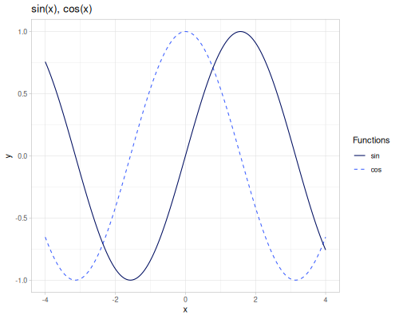
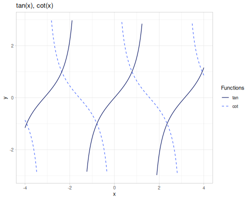
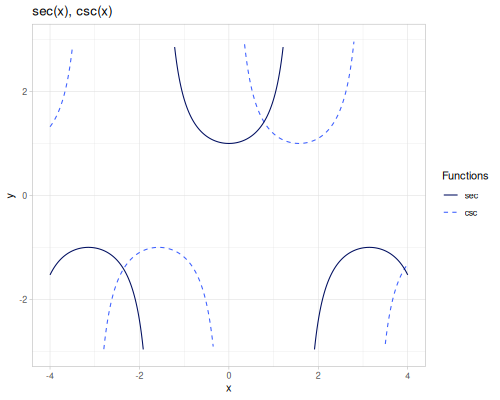
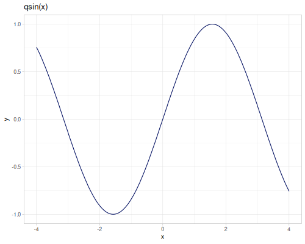
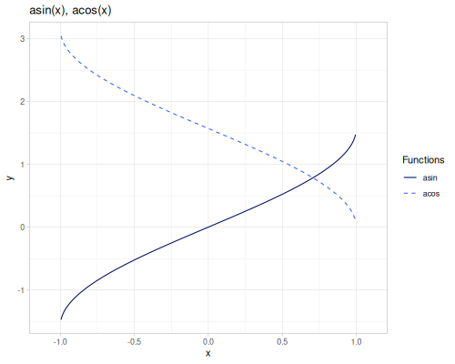
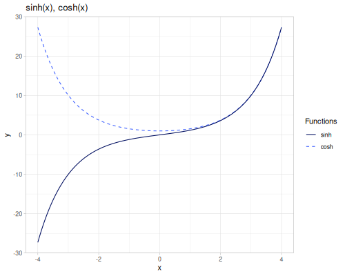
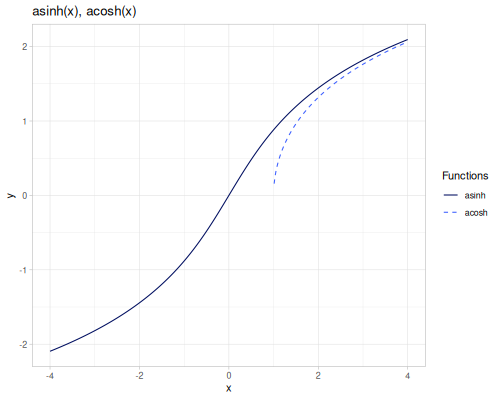
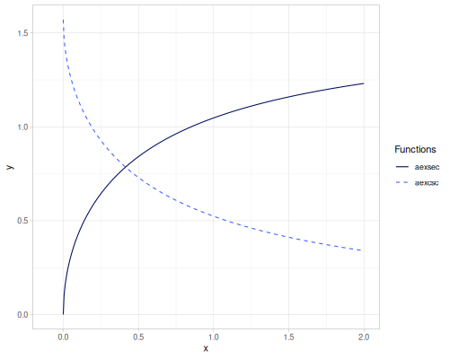
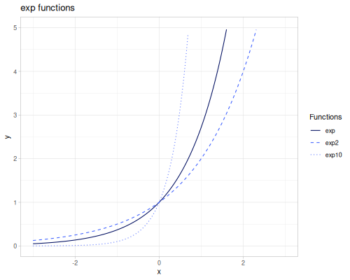
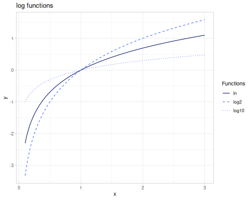

Core
Collection of type hinted math macros and functions. Partially backed by Java static functions and exposed as macros. They are prepared to accept primitive long or double arguments and return long or double only.
There is a possibility to replace clojure.core functions with a selection of fastmath.core macros. Call:
(m/use-primitive-operators)to replace functions with macros(m/unuse-primitive-operators)to revert replacement.
Be aware that there are some differences and fastmath.core versions shoudn’t be treated as a drop-in replacement for clojure.core versions. Also, since Clojure 1.12, always call unuse-primitive-operators at the end of the namespace.
Here is the complete list of replaced functions:
* + - /> < >= <= ==rem quot modbit-or bit-and bit-xor bit-not bit-and-notbit-shift-left bit-shift-right unsigned-bit-shift-rightbit-set bit-clear bit-flip bit-testinc deczero? neg? pos? even? odd?min maxabs
(require '[fastmath.core :as m])Basic operations
Basic math operations.
When used in an expression oprations are inlined and can accept mixture of long and double values. If all values are of long primitive type, long is returned, double otherwise.
When used in higher order function, double is returned always. To operate on long primitive type, reach for long- versions.
+,-,*,/,quotinc,decmin,max,smooth-max,constrainrem,mod,remainder,wrapabs
long versions
long-add,long-sub,long-mult,long-div,long-quotlong-inc,long-declong-min,long-maxlong-rem,long-modlong-abs
Arithmetics
- addition, incrementation
- subtraction, decrementation
- multiplication
- division
- absolute value
Please note that there some differences between division in fastmath and clojure.core
- when called with one argument (
doubleorlong)m//always returns reciprocal (clojure.core//returns a ratio) - when called on
longarguments,m//is a long division (clojure.core//returns a ratio) m//for twolongarguments is equivalent tom/quot
Addition
(m/+) ;; => 0.0
(m/+ 1 2 3 4) ;; => 10
(m/+ 1.0 2.5 3 4) ;; => 10.5
(reduce m/+ [1 2 3]) ;; => 6.0(m/long-add) ;; => 0
(m/long-add 1 2 3 4) ;; => 10
(m/long-add 1.0 2.5 3 4) ;; => 10
(reduce m/long-add [1 2 3.5]) ;; => 6Subtraction
[(m/- 1) (m/- 1.0)] ;; => [-1 -1.0]
(m/- 1 2 3 4) ;; => -8
(m/- 1.0 2.5 3 4) ;; => -8.5
(reduce m/- [1 2 3]) ;; => -4.0(m/long-sub 1) ;; => -1
(m/long-sub 1 2 3 4) ;; => -8
(m/long-sub 1.0 2.5 3 4) ;; => -8
(reduce m/long-sub [1 2 3.5]) ;; => -4Multiplication
(m/*) ;; => 1.0
(m/* 1 2 3 4) ;; => 24
(m/* 1.0 2.5 3 4) ;; => 30.0
(reduce m/* [1 2 3]) ;; => 6.0(m/long-mult) ;; => 1
(m/long-mult 1 2 3 4) ;; => 24
(m/long-mult 1.0 2.5 3 4) ;; => 24
(reduce m/long-mult [1 2 3.5]) ;; => 6Division
[(m// 2) (m// 2) (/ 2)] ;; => [0.5 0.5 1/2]
(m// 1 2 3 4) ;; => 0
(m// 1.0 2.5 3 4) ;; => 0.03333333333333333
(reduce m// [1 2 3]) ;; => 0.16666666666666666
(m/quot 10.5 -3) ;; => -3.0(m/long-div 2) ;; => 0.5
(m/long-div 100 5 3) ;; => 6
(m/long-div 100.5 2.5 3) ;; => 16
(reduce m/long-div [100 2 3.5]) ;; => 16
(m/long-quot 10 -3) ;; => -3Increment and decrement
(m/inc 4) ;; => 5
(m/inc 4.5) ;; => 5.5
(m/dec 4) ;; => 3
(m/dec 4.5) ;; => 3.5
(map m/inc [1 2 3.5 4.5]) ;; => (2.0 3.0 4.5 5.5)(m/long-inc 4) ;; => 5
(m/long-inc 4.5) ;; => 5
(m/long-dec 4) ;; => 3
(m/long-dec 4.5) ;; => 3
(map m/long-inc [1 2 3.5 4.5]) ;; => (2 3 4 5)Absolute value
(m/abs -3) ;; => 3
(m/long-abs -3) ;; => 3
(m/abs -3.5) ;; => 3.5
(m/long-abs -3.5) ;; => 3Remainders
remandmodare the same as inclojure.core,remainderreturns \(dividend - divisor * n\), where \(n\) is the mathematical integer closest to \(\frac{dividend}{divisor}\). Returned value is inside the \([\frac{-|divisor|}{2},\frac{|divisor|}{2}]\) range.wrapwraps the value to be within given interval (right open) \([a,b)\) `
 |
(m/mod 10 4) ;; => 2
(m/mod -10.25 4.0) ;; => 1.75
(m/mod 10.25 -4.0) ;; => -1.75
(m/mod -10.25 -4.0) ;; => -2.25
(m/rem 10 4) ;; => 2
(m/rem -10.25 4.0) ;; => -2.25
(m/rem 10.25 -4.0) ;; => 2.25
(m/rem -10.25 -4.0) ;; => -2.25
(m/remainder 10 4) ;; => 2.0
(m/remainder -10.25 4.0) ;; => 1.75
(m/remainder 10.25 -4.0) ;; => -1.75
(m/remainder -10.25 -4.0) ;; => 1.75
(m/wrap -1.25 1.25 1.0) ;; => 1.0
(m/wrap -1.25 1.25 1.35) ;; => -1.15
(m/wrap -1.25 1.25 -1.25) ;; => -1.25
(m/wrap -1.25 1.25 1.25) ;; => -1.25
(m/wrap [-1.25 1.25] -1.35) ;; => 1.15Min, max, constrain
Constrain is a macro which is equivalent to (max (min value mx) mn)
(m/min 1 2 -3) ;; => -3
(m/min 1.0 2 -3) ;; => -3.0
(m/max 1 2 -3) ;; => 2
(m/max 1.0 2 -3) ;; => 2.0
(m/constrain 10 -1 1) ;; => 1
(m/constrain -10 -1 1) ;; => -1
(m/constrain 0 -1 1) ;; => 0Smooth maximum
Smooth maximum is a family of functions \(\max_\alpha(xs)\) for which \(\lim_{\alpha\to\infty}\max_\alpha(xs)=\max(xs)\).
Five types of smooth maximum are defined (see wikipedia for formulas):
:lse- LogSumExp (default):boltzmann- Boltzmann operator, works for small alpha values:mellowmax:p-norm:smu- smooth maximum unit, \(\epsilon=\frac{1}{\alpha}\)
:lse, :boltzmann and :mellowmax are also smooth minimum for negative \(\alpha\) values.
The following plots show value of the smooth max for different \(\alpha\) and set of the numbers equal to [-3.5 -2 -1 0.1 3 4]. Blue dashed horizontal lines are minimum (-3.5) and maximum values (4.0).
The following plots are defined only for positive \(\alpha\).
 |
(m/smooth-max [-3.5 -2 -1 0.1 3 4] 4.0 :lse) ;; => 4.004537523710555
(m/smooth-max [-3.5 -2 -1 0.1 3 4] -4.0 :lse) ;; => -3.500630381944282
(m/smooth-max [-3.5 -2 -1 0.1 3 4] 4.0 :boltzmann) ;; => 3.9820131397304284
(m/smooth-max [-3.5 -2 -1 0.1 3 4] -4.0 :boltzmann) ;; => -3.496176019710726
(m/smooth-max [-3.5 -2 -1 0.1 3 4] 4.0 :mellowmax) ;; => 3.5565976564035413
(m/smooth-max [-3.5 -2 -1 0.1 3 4] -4.0 :mellowmax) ;; => -3.0526905146372685
(m/smooth-max [-3.5 -2 -1 0.1 3 4] 4.0 :p-norm) ;; => 4.738284340366858
(m/smooth-max [-3.5 -2 -1 0.1 3 4] 4.0 :smu) ;; => 4.060190281957045fma
Fused multiply-add \(fma(a,b,c)=a+bc\) is the operation implemented with better accuracy in Java 9+ and as one instruction (see more here and here). When Java 8 is used fma is replaced with direct a+bc formula.
fma,muladd,negmuladddifference-of-products,sum-of-products
\[\operatorname{fma}(a,b,c)=\operatorname{muladd}(a,b,c)=a+bc\] \[\operatorname{negmuladd}(a,b,c)=\operatorname{fma}(-a,b,c)\]
difference-of-products (dop) and sum-of-products (sop) are using Kahan’s algorithm to avoid catastrophic cancellation.
\[\operatorname{dop}(a,b,c,d)=ab-cd=\operatorname{fma}(a,b,-cd)+\operatorname{fma}(-c,d,cd)\] \[\operatorname{sop}(a,b,c,d)=ab+cd=\operatorname{fma}(a,b,cd)+\operatorname{fma}(c,d,-cd)\]
The following example shows that \(x^2-y^2\) differs from the best floating point approximation which is equal 1.8626451518330422e-9.
(let [x (m/inc (m/pow 2 -29))
y (m/inc (m/pow 2 -30))]
{:proper-value (m/difference-of-products x x y y)
:wrong-value (m/- (m/* x x) (m/* y y))}){:proper-value 1.8626451518330422E-9, :wrong-value 1.862645149230957E-9}(m/fma 3 4 5) ;; => 17.0
(m/muladd 3 4 5) ;; => 17.0
(m/negmuladd 3 4 5) ;; => -7.0
(m/difference-of-products 3 3 4 4) ;; => -7.0
(m/sum-of-products 3 3 4 4) ;; => 25.0Rounding
Various rounding functions.
floor,ceilround,round-even,rint,approx,trunc,itruncqfloor,qceil,qroundfrac,sfracround-up-pow2
floor,ceilandrintaccept additional argument,scale, which allows to round to the nearest multiple of scale.roundreturnslongwhilerintreturnsdoubleround-evenperforms IEEE / IEC rounding (even-odd or bankers’ rounding)approxrounds number to the given number of digits, usesbigdectruncreturns integer part of a number,fracreturns fractional parttruncreturnsdoublewhileitruncreturns longsfrackeeps sign of the argumentqfloor,qceilandqroundare implemented using casting tolonground-up-pow2rounds to the lowest power of 2 greater than an argument, \(2^{\left\lceil{\log_2{x}}\right\rceil}\), returnslong.
 |
(map m/floor [-10.5 10.5]) ;; => (-11.0 10.0)
(m/floor 10.5 4.0) ;; => 8.0
(map m/ceil [-10.5 10.5]) ;; => (-10.0 11.0)
(m/ceil 10.5 4.0) ;; => 12.0
(map m/rint [-10.51 -10.5 -10.49 10.49 10.5 10.51]) ;; => (-11.0 -10.0 -10.0 10.0 10.0 11.0)
(m/rint 10.5 4.0) ;; => 12.0
(m/rint 10.591 0.1) ;; => 10.600000000000001
(map m/round [-10.51 -10.5 -10.49 10.49 10.5 10.51]) ;; => (-11 -10 -10 10 11 11)
(map m/round-even [-10.51 -10.5 -10.49 10.49 10.5 10.51]) ;; => (-11 -10 -10 10 10 11)
(map m/qfloor [-10.5 10.5]) ;; => (-11 10)
(map m/qceil [-10.5 10.5]) ;; => (-10 11)
(map m/qround [-10.51 -10.5 -10.49 10.49 10.5 10.51]) ;; => (-11 -11 -10 10 11 11)
(map m/trunc [-10.591 10.591]) ;; => (-10.0 10.0)
(map m/itrunc [-10.591 10.591]) ;; => (-10 10)
(m/approx 10.591) ;; => 10.59
(m/approx 10.591 1) ;; => 10.6
(m/approx 10.591 0) ;; => 11.0
(m/approx -10.591) ;; => -10.59
(m/approx -10.591 1) ;; => -10.6
(m/approx -10.591 0) ;; => -11.0
(map m/frac [-10.591 10.591]) ;; => (0.5909999999999993 0.5909999999999993)
(map m/sfrac [-10.591 10.591]) ;; => (-0.5909999999999993 0.5909999999999993)
(map m/round-up-pow2 (range 10)) ;; => (0 1 2 4 4 8 8 8 8 16)The difference between rint and round. round is bounded by minimum and maximum long values.
(m/rint 1.23456789E30) ;; => 1.23456789E30
(m/round 1.23456789E30) ;; => 9223372036854775807Sign
Sign of the number.
signumandsgncopy-sign
\[\operatorname{signum}(x)=\begin{cases} -1 & x<0 \\ 1 & x>0 \\ 0 & x=0 \end{cases}\]
\[\operatorname{sgn}(x)=\begin{cases} -1 & x<0 \\ 1 & x\geq 0 \end{cases}\]
copy-sign sets the sign of the second argument to the first. Please note that -0.0 is negative and 0.0 is positive.
\[\operatorname{copy-sign}(x,y)=\begin{cases} |x| & y>0 \lor y=0.0\\ -|x| & y<0 \lor y=-0.0 \end{cases}\]
(m/signum -2.5) ;; => -1.0
(m/signum 2.5) ;; => 1.0
(m/sgn -2.5) ;; => -1.0
(m/sgn 2.5) ;; => 1.0
(m/signum 0) ;; => 0.0
(m/sgn 0) ;; => 1.0
(m/copy-sign 123 -10) ;; => -123.0
(m/copy-sign -123 10) ;; => 123.0
(m/copy-sign 123 -0.0) ;; => -123.0
(m/copy-sign -123 0.0) ;; => 123.0Comparison and Predicates
Various predicates and comparison functions
==,eq,not==,<,>,<=,>=approx-eq,approx=,delta-eq,delta=zero?,negative-zero?,near-zero?,one?neg?,pos?,not-neg?,not-pos?even?,odd?integer?nan?,inf?,pos-inf?,neg-inf?,invalid-double?,valid-double?between?,between-?
Comparison
Comparison functions operate on primitive values and can handle multiple arguments, chaining the comparison (e.g., (m/< 1 2 3) is equivalent to (and (m/< 1 2) (m/< 2 3))).
Standard comparisons:
==,eq: Primitive equality. Note that(m/== 1.0 1)is true. Multi-arity checks if the first argument is equal to all subsequent arguments.not==: Primitive inequality. Multi-arity checks if all arguments are pairwise unique.<,>,<=,>=: Standard primitive inequalities. Multi-arity checks if the values are monotonically increasing/decreasing.
Approximate equality:
approx-eq,approx=: Checks for equality after rounding to a specified number of decimal digits. Can be inaccurate.delta-eq,delta=: Checks if the absolute difference between two numbers is within a given tolerance (absolute and/or relative). This is the recommended way to compare floating-point numbers for near equality- With absolute tolerance: \(|a - b| < \text{abs-tol}\)
- With absolute and relative tolerance: \(|a - b| < \max(\text{abs-tol}, \text{rel-tol} \cdot \max(|a|, |b|))\)
Range checks:
between?: Checks if a value is within a closed interval \([a, b]\), i.e., \(a \le \text{value} \le b\).between-?: Checks if a value is within a half-open interval \((a, b]\), i.e., \(a < \text{value} \le b\).
(m/== 1.0 1) ;; => true
(m/== 1.0 2) ;; => false
(m/== 1 1 2 3 4) ;; => false
(m/eq 1.0 1) ;; => true
(m/not== 1.0 1) ;; => false
(m/not== 1.0 2) ;; => true
(m/not== 1 2 3 4) ;; => true
(m/not== 1 2 3 1 4) ;; => false
(m/< 1.0 1) ;; => false
(m/< 1.0 2) ;; => true
(m/< 2 1.0) ;; => false
(m/< 1 2 3 4 10) ;; => true
(m/< 10 4 3 2 1) ;; => false
(m/<= 1.0 1) ;; => true
(m/<= 1.0 2) ;; => true
(m/<= 2 1.0) ;; => false
(m/> 1.0 1) ;; => false
(m/> 1.0 2) ;; => false
(m/> 2 1.0) ;; => true
(m/> 1 2 3 4 10) ;; => false
(m/> 10 4 3 2 1) ;; => true
(m/>= 1.0 1) ;; => true
(m/>= 1.0 2) ;; => false
(m/>= 2 1.0) ;; => true
(m/between? -1 1 -1) ;; => true
(m/between? -1 1 0) ;; => true
(m/between? -1 1 1) ;; => true
(m/between-? -1 1 -1) ;; => false
(m/between-? -1 1 0) ;; => true
(m/between-? -1 1 1) ;; => true(m/approx-eq 10 10.01) ;; => false
(m/approx-eq 10 10.001) ;; => true
(m/approx-eq 10 10.01 1) ;; => true
(m/approx-eq 10 10.001 5) ;; => false
(m/delta-eq 10 10.01) ;; => false
(m/delta-eq 10 10.01 0.1) ;; => true
(m/delta-eq 1.0E-6 1.01E-6) ;; => true
(m/delta-eq 1.0E-6 1.01E-6 1.0E-8) ;; => false
(m/delta-eq 1.0E-6 1.01E-6 1.0E-8 0.01) ;; => truePredicates
Basic predicates for common number properties:
zero?: Checks if value is 0 or 0.0.negative-zero?: Checks specifically for the floating point-0.0.near-zero?: Checks if absolute value is within absolute and/or relative tolerance of zero: \(|x| < \text{abs-tol}\) or \(|x| < \max(\text{abs-tol}, \text{rel-tol} \cdot |x|)\).one?: Checks if value is 1 or 1.0.neg?: Checks if value is \(< 0\).pos?: Checks if value is \(> 0\).not-neg?: Checks if value is \(\ge 0\).not-pos?: Checks if value is \(\le 0\).even?: Checks if a long is even.odd?: Checks if a long is odd.integer?: Checks if a number (long or double) has a zero fractional part.
(m/zero? 0) ;; => true
(m/zero? 0.0) ;; => true
(m/zero? -0.0) ;; => true
(m/zero? 1) ;; => false
(m/negative-zero? 0.0) ;; => false
(m/negative-zero? -0.0) ;; => true
(m/one? 1) ;; => true
(m/one? 1.0) ;; => true
(m/neg? -1) ;; => true
(m/neg? 0) ;; => false
(m/neg? 1.0) ;; => false
(m/pos? -1) ;; => false
(m/pos? 0) ;; => false
(m/pos? 1.0) ;; => true
(m/not-neg? -1) ;; => false
(m/not-neg? 0) ;; => true
(m/not-neg? 1.0) ;; => true
(m/not-pos? -1) ;; => true
(m/not-pos? 0) ;; => true
(m/not-pos? 1.0) ;; => false
(m/even? 0) ;; => true
(m/even? 1) ;; => false
(m/even? 2) ;; => true
(m/odd? 0) ;; => false
(m/odd? 1) ;; => true
(m/odd? 2) ;; => false
(m/integer? 1) ;; => true
(m/integer? 1.0) ;; => true
(m/integer? 1.1) ;; => falsePredicates for floating point special values:
nan?: Checks if value is Not-a-Number (NaN).inf?: Checks if value is positive or negative infinity (Inf or -Inf).pos-inf?: Checks if value is positive infinity (Inf).neg-inf?: Checks if value is negative infinity (-Inf).invalid-double?: Checks if value is not a finite double (NaN or ±Inf).valid-double?: Checks if value is a finite double (not NaN or ±Inf).
(m/nan? ##NaN) ;; => true
(m/nan? ##Inf) ;; => false
(m/nan? ##-Inf) ;; => false
(m/nan? 1) ;; => false
(m/inf? ##NaN) ;; => false
(m/inf? ##Inf) ;; => true
(m/inf? ##-Inf) ;; => true
(m/inf? 1) ;; => false
(m/pos-inf? ##NaN) ;; => false
(m/pos-inf? ##Inf) ;; => true
(m/pos-inf? ##-Inf) ;; => false
(m/pos-inf? 1) ;; => false
(m/neg-inf? ##NaN) ;; => false
(m/neg-inf? ##Inf) ;; => false
(m/neg-inf? ##-Inf) ;; => true
(m/neg-inf? 1) ;; => false
(m/valid-double? ##NaN) ;; => false
(m/valid-double? ##Inf) ;; => false
(m/valid-double? ##-Inf) ;; => false
(m/valid-double? 1) ;; => true
(m/invalid-double? ##NaN) ;; => true
(m/invalid-double? ##Inf) ;; => true
(m/invalid-double? ##-Inf) ;; => true
(m/invalid-double? 1) ;; => falseTrigonometry
Trigonometric (with historical variants) and hyperbolic functions.
radians,degreessin,cos,tan,cot,sec,cscqsin,qcossinpi,cospi,tanpi,cotpi,secpi,cscpiasin,acos,atan,atan2,acot,asec,acscsinh,cosh,tanh,coth,sech,scshasinh,acosh,atanh,acoth,asech,ascshcrd,acrdversin,coversin,vercos,covercosaversin,acoversin,avercos,acovercoshaversin,hacoversin,havercos,hacovercosahaversin,ahacoversin,ahavercos,ahacovercosexsec,excscaexsec,aexcscsinc
Angle conversion
Convert between radians and degrees
radians(deg): Converts an angle from degrees to radians. \[\text{radians} = \text{degrees} \cdot \frac{\pi}{180^\circ}\]degrees(rad): Converts an angle from radians to degrees. \[\text{degrees} = \text{radians} \cdot \frac{180^\circ}{\pi}\]
(m/radians 180) ;; => 3.141592653589793
(m/degrees m/PI) ;; => 180.0
(m/radians 90) ;; => 1.5707963267948966
(m/degrees m/HALF_PI) ;; => 90.0Trigonometric
Standard trigonometric functions:
sin(x): Sine ofx.cos(x): Cosine ofx.tan(x): Tangent ofx, \(\tan(x) = \frac{\sin(x)}{\cos(x)}\).cot(x): Cotangent ofx, \(\cot(x) = \frac{1}{\tan(x)}\).sec(x): Secant ofx, \(\sec(x) = \frac{1}{\cos(x)}\).csc(x): Cosecant ofx, \(\csc(x) = \frac{1}{\sin(x)}\).
|  |  |
|  |
(m/sin m/HALF_PI) ;; => 1.0
(m/cos m/PI) ;; => -1.0
(m/tan m/QUARTER_PI) ;; => 0.9999999999999997
(m/cot m/HALF_PI) ;; => 6.12323399538461E-17
(m/sec 0.0) ;; => 1.0
(m/csc m/HALF_PI) ;; => 1.0Quick trigonometric functions:
qsin(x): Fast, less accurate sine.qcos(x): Fast, less accurate cosine.
|  | |
(m/qsin 0.1) ;; => 0.10106986275482788
(m/sin 0.1) ;; => 0.09983341664682818
(m/qcos 0.1) ;; => 0.9948793307948056
(m/cos 0.1) ;; => 0.9950041652780257Pi-scaled trigonometric functions:
sinpi(x): Sine of \(\pi x\), \(\sin(\pi x)\).cospi(x): Cosine of \(\pi x\), \(\cos(\pi x)\).tanpi(x): Tangent of \(\pi x\), \(\tan(\pi x)\).cotpi(x): Cotangent of \(\pi x\), \(\cot(\pi x)\).secpi(x): Secant of \(\pi x\), \(\sec(\pi x)\).cscpi(x): Cosecant of \(\pi x\), \(\csc(\pi x)\).
(m/sinpi 0.5) ;; => 1.0
(m/cospi 1) ;; => -1.0
(m/tanpi 0.25) ;; => 0.9999999999999997
(m/cotpi 0.5) ;; => 6.12323399538461E-17
(m/secpi 0) ;; => 1.0
(m/cscpi 0.5) ;; => 1.0Inverse trigonometric
Inverse trigonometric functions:
asin(x): Arcsine ofx, \(\arcsin(x)\).acos(x): Arccosine ofx, \(\arccos(x)\).atan(x): Arctangent ofx, \(\arctan(x)\).atan2(y, x): Arctangent of \(\frac{y}{x}\), returning the angle in the correct quadrant.acot(x): Arccotangent ofx, \(\operatorname{arccot}(x) = \frac{\pi}{2} - \arctan(x)\).asec(x): Arcsecant ofx, \(\operatorname{arcsec}(x) = \arccos(\frac{1}{x})\).acsc(x): Arccosecant ofx, \(\operatorname{arccsc}(x) = \arcsin(\frac{1}{x})\).
|  | |
(m/asin 1) ;; => 1.5707963267948966
(m/acos -1) ;; => 3.141592653589793
(m/atan 1) ;; => 0.7853981633974483
(m/acot 0) ;; => 1.5707963267948966
(m/asec 1) ;; => 0.0
(m/acsc 1) ;; => 1.5707963267948966
(m/atan2 1 1) ;; => 0.7853981633974483Special
sinc(x): Sinc function: \(\operatorname{sinc}(x) = \frac{\sin(\pi x)}{\pi x}\) for \(x \ne 0\), and \(1\) for \(x=0\).
(m/sinc 0.0) ;; => 1.0
(m/sinc 1.0) ;; => 3.898171832295186E-17Hyperbolic
Hyperbolic functions
sinh(x): Hyperbolic sine, \(\sinh(x) = \frac{e^x - e^{-x}}{2}\).cosh(x): Hyperbolic cosine, \(\cosh(x) = \frac{e^x + e^{-x}}{2}\).tanh(x): Hyperbolic tangent, \(\tanh(x) = \frac{\sinh(x)}{\cosh(x)}\).coth(x): Hyperbolic cotangent, \(\coth(x) = \frac{1}{\tanh(x)}\).sech(x): Hyperbolic secant, \(\operatorname{sech}(x) = \frac{1}{\cosh(x)}\).csch(x): Hyperbolic cosecant, \(\operatorname{csch}(x) = \frac{1}{\sinh(x)}\).
|  | |
(m/sinh 0) ;; => 0.0
(m/cosh 0) ;; => 1.0
(m/tanh 0) ;; => 0.0
(m/coth 1) ;; => 1.3130352854993315
(m/sech 0) ;; => 1.0
(m/csch 1) ;; => 0.8509181282393214Inverse hyperbolic
Inverse hyperbolic functions:
asinh(x): Area hyperbolic sine, \(\operatorname{arsinh}(x) = \ln(x + \sqrt{x^2 + 1})\).acosh(x): Area hyperbolic cosine, \(\operatorname{arcosh}(x) = \ln(x + \sqrt{x^2 - 1})\) for \(x \ge 1\).atanh(x): Area hyperbolic tangent, \(\operatorname{artanh}(x) = \frac{1}{2} \ln(\frac{1 + x}{1 - x})\) for \(-1 < x < 1\).acoth(x): Area hyperbolic cotangent, \(\operatorname{arcoth}(x) = \operatorname{artanh}(\frac{1}{x})\).asech(x): Area hyperbolic secant, \(\operatorname{arsech}(x) = \operatorname{arcosh}(\frac{1}{x})\).acsch(x): Area hyperbolic cosecant, \(\operatorname{arcsch}(x) = \operatorname{arsinh}(\frac{1}{x})\).
(m/asinh 0) ;; => 0.0
(m/acosh 1) ;; => 0.0
(m/atanh 0) ;; => 0.0
(m/acoth 2) ;; => 0.5493061443340548
(m/asech 1) ;; => 0.0
(m/acsch 1) ;; => 0.8813735870195429|  | |
Historical
Historical/Specific trigonometric functions:
crd(x): Chord, \(\operatorname{crd}(x) = 2 \sin(\frac{x}{2})\).acrd(x): Inverse chord, \(\operatorname{acrd}(x) = 2 \arcsin(\frac{x}{2})\).versin(x): Versine, \(\operatorname{versin}(x) = 1 - \cos(x)\).coversin(x): Coversine, \(\operatorname{coversin}(x) = 1 - \sin(x)\).vercos(x): Vercosine, \(\operatorname{vercos}(x) = 1 + \cos(x)\).covercos(x): Covercosine, \(\operatorname{covercos}(x) = 1 + \sin(x)\).haversin(x)/haversine(x): Haversine, \(\operatorname{hav}(x) = \sin^2(\frac{x}{2}) = \frac{1 - \cos(x)}{2}\). Also computes the haversine value for pairs of geographic coordinates.hacoversin(x): Hacoversine, \(\operatorname{hacov}(x) = \frac{1 - \sin(x)}{2}\).havercos(x): Havercosine, \(\operatorname{haver}(x) = \frac{1 + \cos(x)}{2}\).hacovercos(x): Hacovercosine, \(\operatorname{hacover}(x) = \frac{1 + \sin(x)}{2}\).exsec(x): Exsecant, \(\operatorname{exsec}(x) = \sec(x) - 1\).excsc(x): Excosecant, \(\operatorname{excsc}(x) = \csc(x) - 1\).aversin(x): Arc versine, \(\operatorname{aversin}(x) = \arccos(1 - x)\).acoversin(x): Arc coversine, \(\operatorname{acoversin}(x) = \arcsin(1 - x)\).avercos(x): Arc vercosine, \(\operatorname{avercos}(x) = \arccos(x - 1)\).acovercos(x): Arc covercosine, \(\operatorname{acovercos}(x) = \arcsin(x - 1)\).ahaversin(x): Arc haversine, \(\operatorname{ahav}(x) = \arccos(1 - 2x)\).ahacoversin(x): Arc hacoversine, \(\operatorname{ahacov}(x) = \arcsin(1 - 2x)\).ahavercos(x): Arc havercosine, \(\operatorname{ahaver}(x) = \arccos(2x - 1)\).ahacovercos(x): Arc hacovercosine, \(\operatorname{ahacover}(x) = \arcsin(2x - 1)\).aexsec(x): Arc exsecant, \(\operatorname{aexsec}(x) = \operatorname{arcsec}(1 + x)\).aexcsc(x): Arc excosecant, \(\operatorname{aexcsc}(x) = \operatorname{arccsc}(1 + x)\).
(m/crd m/HALF_PI) ;; => 1.414213562373095
(m/versin m/HALF_PI) ;; => 0.9999999999999999
(m/coversin m/PI) ;; => 0.9999999999999999
(m/vercos m/HALF_PI) ;; => 1.0
(m/covercos m/PI) ;; => 1.0000000000000002
(m/haversin m/HALF_PI) ;; => 0.49999999999999994
(m/hacoversin m/PI) ;; => 0.49999999999999994
(m/havercos m/HALF_PI) ;; => 0.5
(m/hacovercos m/PI) ;; => 0.5000000000000001
(m/exsec m/PI) ;; => -2.0
(m/excsc m/HALF_PI) ;; => 0.0
(m/acrd 2.0) ;; => 3.141592653589793
(m/aversin 1.0) ;; => 1.5707963267948966
(m/acoversin 0.0) ;; => 1.5707963267948966
(m/avercos 1.0) ;; => 1.5707963267948966
(m/acovercos 0.0) ;; => -1.5707963267948966
(m/ahaversin 1.0) ;; => 3.141592653589793
(m/ahacoversin 0.0) ;; => 1.5707963267948966
(m/ahavercos 0.0) ;; => 3.141592653589793
(m/ahacovercos 1.0) ;; => 1.5707963267948966
(m/aexsec -2.0) ;; => 3.141592653589793
(m/aexcsc 0.0) ;; => 1.5707963267948966|  | |
 |
The haversine formula for calculating the square of half the chord length between two points \((\phi_1, \lambda_1)\) and \((\phi_2, \lambda_2)\) on a sphere (where \(\phi\) is latitude and \(\lambda\) is longitude, in radians) is:
\[ a = \sin^2\left(\frac{\phi_2 - \phi_1}{2}\right) + \cos(\phi_1) \cos(\phi_2) \sin^2\left(\frac{\lambda_2 - \lambda_1}{2}\right) \]
In this formula: * \(a\) is the square of half the chord length of the great-circle arc. * \(\phi_1, \phi_2\) are the latitudes of the two points. * \(\lambda_1, \lambda_2\) are the longitudes of the two points.
The actual great-circle distance \(d\) between the points on a sphere of radius \(R\) is then given by: \[ d = R \cdot 2 \arcsin(\sqrt{a}) \]
The fastmath.core/haversin function with four arguments [lat1 lon1 lat2 lon2] calculates the value \(a\). The fastmath.core/haversine-dist function then calculates the distance \(d\) assuming \(R=1\).
Let’s calculate haversin value for two lat/lon points in degrees [38.898N, 77.037E] (White House) and [48.858N, 2.294W] (Eiffel Tower).
(m/haversin (m/radians 38.898) (m/radians 77.037) (m/radians 48.858) (m/radians -2.294))0.2161581789280517Which is equivalent to a distance in km on Earth:
(* 6371.2
(m/haversine-dist (m/radians 38.898) (m/radians 77.037) (m/radians 48.858) (m/radians -2.294)))6161.63145620435Power and logarithms
This section covers exponential, logarithmic, and power functions, including various specialized and numerically stable variants.
exp,exp2,exp10,qexpln,log,logb,log2,log10,qlogexpm1,exprel,xexpx,xexpy,cexpexp,expexplog1p,log1pexp,log1mexp,log2mexp,log1psq,logexpm1,log1pmx,logmxp1xlogx,xlogy,xlog1py,cloglog,loglog,logcoshlogaddexp,logsubexp,logsumexp,log2intsigmoid,logitsqrt,cbrt,sq,cbsafe-sqrt,qsqrt,rqsqrtpow,spow,fpow,qpow,mpow,tpow,pow2,pow3,pow10low-2-exp,high-2-exp,low-exp,high-exp
Exponents
exp(x): Natural exponential function \(e^x\).exp2(x): Base-2 exponential function \(2^x\).exp10(x): Base-10 exponential function \(10^x\).qexp(x): Fast, less accurate version of `exp(x)$.
|  |
(m/exp 1) ;; => 2.7182818284590455
(m/exp2 3) ;; => 8.0
(m/exp10 2) ;; => 100.0
(m/qexp 1.0) ;; => 2.799318313598633Logarithms
ln(x): Natural logarithm \(\ln(x)\). Alias forlog(x)with one argument.log(x): Natural logarithm \(\ln(x)\). With two arguments, computes \(\log_b(x)\).logb(b, x): Logarithm of \(x\) with base \(b\), \(\log_b(x)\).log2(x): Base-2 logarithm \(\log_2(x)\).log2int(x): Integer base-2 logarithm, related to the exponent of the floating point representation. Returnslong.log10(x): Base-10 logarithm \(\log_{10}(x)\).qlog(x): Fast, less accurate version of `log(x)$.
|  |
(m/ln 10) ;; => 2.302585092994046
(m/log 10) ;; => 2.302585092994046
(m/log 2 8) ;; => 3.0
(m/logb 2 8) ;; => 3.0
(m/log2 8) ;; => 2.9999999999999996
(m/log2int 8) ;; => 3
(m/log2int 7.1) ;; => 3
(m/log10 100) ;; => 2.0
(m/qlog 10.0) ;; => 2.3025850929940455Specialized Log/Exp functions
These functions provide numerically stable computations for expressions involving exp and log especially for small or large arguments.
expm1(x): \(e^x - 1\), computed accurately for small \(x\).exprel(x): \((e^x - 1)/x\), computed accurately for small \(x\). Returns 1 for \(x=0\).xexpx(x): \(x e^x\).xexpy(x,y): \(x e^y\).cexpexp(x): \(1-e^{-e^x}\), inverse ofcloglog.expexp(x): \(e^{-e^{-x}}\), inverse ofloglog.log1p(x): \(\ln(1+x)\), computed accurately for small \(x\).log1pexp(x): \(\ln(1+e^x)\).log1mexp(x): \(\ln(1-e^x)\), for \(x < 0\).log2mexp(x): \(\ln(2-e^x)\).log1psq(x): \(\ln(1+x^2)\), computed accurately for small \(x\).logexpm1(x): \(\ln(e^x - 1)\).log1pmx(x): \(\ln(1+x)-x\), computed accurately for small \(x\).logmxp1(x): \(\ln(x)-x+1\), computed accurately for \(x\) near 1.xlogx(x): \(x \ln(x)\). Returns 0 for \(x=0\).xlogy(x, y): \(x \ln(y)\). Returns 0 for \(x=0\).xlog1py(x, y): \(x \ln(1+y)\). Returns 0 for \(x=0\).cloglog(x): \(\ln(-\ln(1-x))\). Used in complementary log-log models.loglog(x): \(-\ln(-\ln(x))\).logcosh(x): \(\ln(\cosh(x))\).
 |
|
(m/expm1 1.0E-9) ;; => 1.0000000005000001E-9
(m/exprel 1.0E-9) ;; => 1.0000000005000001E-9
(m/xexpx 0.5) ;; => 0.8243606353500641
(m/xexpy 0.5 -0.5) ;; => 0.3032653298563167
(m/cexpexp 1.0) ;; => 0.9340119641546875
(m/expexp 1.0) ;; => 0.6922006275553464
(m/log1p 1.0E-9) ;; => 9.999999995E-10
(m/log1pexp 0) ;; => 0.6931471805599453
(m/log1mexp -1) ;; => -0.458675145387082
(m/log2mexp -1) ;; => 0.4898801256447501
(m/log1psq 1.0E-5) ;; => 9.999999999500002E-11
(m/logexpm1 1) ;; => 0.5413248546129182
(m/log1pmx 1) ;; => -0.3068528194400547
(m/xlogx 2) ;; => 1.3862943611198906
(m/xlogy 2 5) ;; => 3.2188758248682006
(m/xlog1py 0.5 -0.5) ;; => -0.34657359027997264
(m/cloglog 0.5) ;; => -0.36651292058166435
(m/loglog 0.5) ;; => 0.36651292058166435
(m/logcosh 1) ;; => 0.4337808304830272Log-sum-exp
These functions are used for numerically stable computation of sums and differences of exponents.
logaddexp(x, y): \(\ln(e^x + e^y)\).logsubexp(x, y): \(\ln(|e^x - e^y|)\).logsumexp(xs): \(\ln(\sum_{i} e^{x_i})\).
(m/logaddexp 0 0) ;; => 0.6931471805599453
(m/logaddexp 100 100) ;; => 100.69314718055995
(m/logsubexp 0 0) ;; => ##-Inf
(m/logsubexp 100 99) ;; => 99.54132485461292
(m/logsumexp [0 0 0]) ;; => 1.0986122886681098
(m/logsumexp [100 100 100]) ;; => 101.09861228866811Sigmoid and Logit
Functions used in statistics and machine learning.
sigmoid(x): Sigmoid function \(\sigma(x) = \frac{1}{1+e^{-x}}\). Also known as the logistic function.logit(x): Logit function \(\operatorname{logit}(x) = \ln(\frac{x}{1-x})\) for \(0 < x < 1\).
(m/sigmoid 0) ;; => 0.5
(m/sigmoid 10) ;; => 0.9999546021312976
(m/sigmoid -10) ;; => 4.5397868702434395E-5
(m/logit 0.5) ;; => 0.0
(m/logit 0.9) ;; => 2.1972245773362196
(m/logit 0.1) ;; => -2.197224577336219Roots and Powers
Basic root and power functions.
sqrt(x): Square root \(\sqrt{x}\).cbrt(x): Cubic root \(\sqrt[3]{x}\).sq(x)orpow2(x): Square \(x^2\).cb(x)orpow3(x): Cube \(x^3\).pow10(x): \(x^{10}\).pow(x, exponent): \(x^{\text{exponent}}\).spow(x, exponent): Symmetric power of \(x\), keeping the sign: \(\operatorname{sgn}(x) |x|^{\text{exponent}}\).fpow(x, exponent): Fast integer power \(x^n\), where \(n\) is an integer.mpow(x, exponent, modulus): Modular exponentiation \(x^\text{exponent} \pmod{\text{modulus}}\).tpow(x, exponent, shift): Truncated power \((x-\text{shift})^\text{exponent}\) for \(x\ge \text{shift}\), \(0.0\) otherwise.qsqrt(x): Fast, less accurate square root.rqsqrt(x): Fast, less accurate reciprocal square root \(1/\sqrt{x}\).safe-sqrt(x): Square root, returning 0 for \(x \le 0\).
(m/sqrt 9) ;; => 3.0
(m/qsqrt 9) ;; => 3.053203231465716
(m/rqsqrt 9) ;; => 0.3424875211975356
(m/cbrt 27) ;; => 3.0
(m/sq 3) ;; => 9.0
(m/cb 3) ;; => 27.0
(m/pow 2 3) ;; => 8.0
(m/pow 9 0.5) ;; => 3.0
(m/pow 0.2 0.3) ;; => 0.6170338627200097
(m/qpow 0.2 0.3) ;; => 0.61701691483573
(m/spow -8 1/3) ;; => -2.0
(m/fpow 2 10) ;; => 1024.0
(m/mpow 30 112 74) ;; => 70
(m/tpow 3 3) ;; => 27.0
(m/tpow -3 3) ;; => 0.0
(m/tpow 6 3 2) ;; => 64.0
(m/tpow 0 3 2) ;; => 0.0
(m/safe-sqrt -4) ;; => 0.0 |
|
Exponent/Log Utilities
Functions related to powers of 2 and general bases.
low-2-exp(x): Finds the largest integer \(n\) such that \(2^n \le |x|\). Returnslong.high-2-exp(x): Finds the smallest integer \(n\) such that \(2^n \ge |x|\). Returnslong.low-exp(b, x): Finds the largest integer \(n\) such that \(b^n \le |x|\). Returnslong.high-exp(b, x): Finds the smallest integer \(n\) such that \(b^n \ge |x|\). Returnslong.
(m/low-2-exp 10) ;; => 3
(m/high-2-exp 10) ;; => 4
(m/low-exp 10 150) ;; => 2
(m/high-exp 10 150) ;; => 3Bitwise operations
Functions for performing bitwise operations on long primitive types.
bit-and,bit-or,bit-xor,bit-not,bit-nand,bit-nor,bit-xnor,bit-and-notbit-set,bit-clear,bit-flip,bit-test<<,bit-shift-left,>>,bit-shift-right,>>>,unsigned-bit-shift-right
Logical Bitwise Operations
These functions perform standard logical operations on the individual bits of their long arguments. They are inlined and accept one or more arguments for multi-arity operations.
bit-and: Bitwise AND (\(\land\)).bit-or: Bitwise OR (\(\lor\)).bit-xor: Bitwise XOR (\(\oplus\)).bit-not: Bitwise NOT (\(\sim\)).bit-nand: Bitwise NAND (\(\neg (x \land y)\)).bit-nor: Bitwise NOR (\(\neg (x \lor y)\)).bit-xnor: Bitwise XNOR (\(\neg (x \oplus y)\)).bit-and-not: Bitwise AND with complement of the second argument (\(x \land \sim y\)).
(m/bit-and 12 10) ;; => 8
(m/bit-or 12 10) ;; => 14
(m/bit-xor 12 10) ;; => 6
(m/bit-not 12) ;; => -13
(m/bit-nand 12 10) ;; => -9
(m/bit-nor 12 10) ;; => -15
(m/bit-xnor 12 10) ;; => -7
(m/bit-and-not 12 10) ;; => 4
(kind/md "Multi-arity examples") ;; => ["Multi-arity examples"]
(m/bit-and 15 12 10) ;; => 8
(m/bit-or 0 12 10) ;; => 14
(m/bit-xor 15 12 10) ;; => 9Bit Shift Operations
These functions shift the bits of a long value left or right.
<</bit-shift-left: Signed left shift (\(x \ll \text{shift}\)). Bits shifted off the left are discarded, and zero bits are shifted in from the right.>>/bit-shift-right: Signed right shift (\(x \gg \text{shift}\)). Bits shifted off the right are discarded. The sign bit (the leftmost bit) is extended to fill in from the left, preserving the number’s sign.>>>/unsigned-bit-shift-right: Unsigned right shift (\(x \ggg \text{shift}\)). Bits shifted off the right are discarded. Zero bits are shifted in from the left, regardless of the number’s sign.
(m/<< 12 2) ;; => 48
(m/bit-shift-left 12 2) ;; => 48
(m/>> 12 2) ;; => 3
(m/bit-shift-right 12 2) ;; => 3
(m/>> -12 2) ;; => -3
(m/bit-shift-right -12 2) ;; => -3
(m/>>> 12 2) ;; => 3
(m/unsigned-bit-shift-right 12 2) ;; => 3
(m/>>> -12 2) ;; => 4611686018427387901
(m/unsigned-bit-shift-right -12 2) ;; => 4611686018427387901Bit Manipulation
Functions to manipulate individual bits within a long value.
bit-set: Sets a specific bit at the given index to1.bit-clear: Clears a specific bit at the given index to0.bit-flip: Flips the state of a specific bit at the given index (0becomes1,1becomes0).bit-test: Tests the state of a specific bit at the given index. Returnstrueif the bit is1,falseif it is0.
(m/bit-set 10 1) ;; => 10
(m/bit-clear 10 3) ;; => 2
(m/bit-flip 10 2) ;; => 14
(m/bit-test 10 1) ;; => true
(m/bit-test 10 0) ;; => falseFloating point
Functions for inspecting and manipulating the binary representation of floating-point numbers, and for finding adjacent floating-point values.
next-double,prev-double,ulpdouble-bits,double-high-bits,double-low-bits,bits->doubledouble-exponent,double-significand
next-double(x): Returns the floating-point value adjacent toxin the direction of positive infinity. Can take an optionaldeltaargument to find the valuedeltasteps away.prev-double(x): Returns the floating-point value adjacent toxin the direction of negative infinity. Can take an optionaldeltaargument to find the valuedeltasteps away.ulp(x): Returns the size of an ulp ofx- the distance between this floating-point value and the floating-point value adjacent to it. Formally, it’s the spacing between floating-point numbers in the neighborhood ofx.double-bits(x): Returns the 64-bitlonginteger representation of thedoublevaluexaccording to the IEEE 754 floating-point “double format†bit layout.double-high-bits(x): Returns the high 32 bits of thedoublevaluex’s IEEE 754 representation as along.double-low-bits(x): Returns the low 32 bits of thedoublevaluex’s IEEE 754 representation as along.bits->double(bits): Returns thedoublefloating-point value corresponding to the given 64-bitlonginteger representation. This is the inverse ofdouble-bits.double-exponent(x): Returns the unbiased exponent of thedoublevaluex.double-significand(x): Returns the significand (mantissa) of thedoublevaluexas along. This is the 52 explicit bits of the significand for normalized numbers.log2int(x): Returns an integer approximation of \(\log_2(|x|)\). It’s closely related todouble-exponentbut includes an adjustment based on the significand to provide a more precise floor-like integer log.
(m/next-double 0.0) ;; => 4.9E-324
(m/next-double -0.0) ;; => 4.9E-324
(m/next-double 1.0) ;; => 1.0000000000000002
(m/next-double 1.0 10) ;; => 1.0000000000000022
(m/next-double 1.0E20) ;; => 1.0000000000000002E20
(m/prev-double 0.0) ;; => -4.9E-324
(m/prev-double 1.0) ;; => 0.9999999999999999
(m/prev-double 1.0 10) ;; => 0.9999999999999989
(m/prev-double 1.0E20) ;; => 9.999999999999998E19
(m/ulp 1.0) ;; => 2.220446049250313E-16
(m/ulp 2.0) ;; => 4.440892098500626E-16
(m/ulp 1.0E20) ;; => 16384.0
(m/log2int 8.0) ;; => 3
(m/double-exponent 8.0) ;; => 3
(m/log2int 7.1) ;; => 3
(m/double-exponent 7.1) ;; => 2Now let’s convert 123.456 to internal representation.
(let [d 123.456] {:double d, :bits (m/double-bits d), :high (m/double-high-bits d), :low (m/double-low-bits d), :exponent (m/double-exponent d), :significand (m/double-significand d)}){:bits 4638387860618067575,
:double 123.456,
:exponent 6,
:high 1079958831,
:low 446676599,
:significand 4183844053827191}Convert back to a double:
(m/bits->double 4638387860618067575)123.45600000000559Combinatorics
Functions for common combinatorial calculations, including factorials and binomial coefficients.
factorial20,factorial,inv-factorial,log-factorialfalling-factorial,falling-factorial-int,rising-factorial,rising-factorial-intcombinations,log-combinations
Factorials
The factorial of a non-negative integer \(n\), denoted by \(n!\), is the product of all positive integers less than or equal to \(n\). \(0!\) is defined as \(1\).
factorial20(n): Computes \(n!\) for \(0 \le n \le 20\) using a precomputed table. Returnslong.factorial(n): Computes \(n!\) for any non-negative integer \(n\). For \(n > 20\), it uses the Gamma function: \(n! = \Gamma(n+1)\). Returnsdouble.inv-factorial(n): Computes the inverse factorial, \(\frac{1}{n!}\). Returnsdouble.log-factorial(n): Computes the natural logarithm of the factorial, \(\ln(n!) = \ln(\Gamma(n+1))\). Returnsdouble.
(m/factorial 5) ;; => 120.0
(m/factorial20 5) ;; => 120
(m/factorial 21) ;; => 5.1090942171709776E19
(m/inv-factorial 5) ;; => 0.008333333333333333
(m/log-factorial 5) ;; => 4.787491742782046Factorial-like products
These functions generalize the factorial to falling (descending) and rising (Pochhammer) products.
falling-factorial-int(n, x): Computes the falling factorial \(x^{\underline{n}} = x(x-1)\dots(x-n+1)\) for integer \(n \ge 0\).falling-factorial(n, x): Computes the falling factorial for real \(n\), \(x^{\underline{n}} = \frac{\Gamma(x+1)}{\Gamma(x-n+1)}\).rising-factorial-int(n, x): Computes the rising factorial (Pochhammer symbol) \(x^{\overline{n}} = x(x+1)\dots(x+n-1)\) for integer \(n \ge 0\).rising-factorial(n, x): Computes the rising factorial for real \(n\), \(x^{\overline{n}} = \frac{\Gamma(x+n)}{\Gamma(x)}\).
(m/falling-factorial-int 3 10) ;; => 720.0
(m/falling-factorial 3.5 10.0) ;; => 1939.2340147230293
(m/rising-factorial-int 3 10) ;; => 1320.0
(m/rising-factorial 3.5 10.0) ;; => 4713.795382273956Combinations
The binomial coefficient \(\binom{n}{k}\) represents the number of ways to choose \(k\) elements from a set of \(n\) distinct elements, without regard to the order of selection.
combinations(n, k): Computes the binomial coefficient \(\binom{n}{k} = \frac{n!}{k!(n-k)!}\). Returnsdouble.log-combinations(n, k): Computes the natural logarithm of the binomial coefficient, \(\ln\binom{n}{k}\). Returnsdouble.
(m/combinations 10 2) ;; => 45.0
(m/combinations 10 8) ;; => 45.0
(m/combinations 5 0) ;; => 1.0
(m/combinations 5 6) ;; => 0.0
(m/log-combinations 10 2) ;; => 3.8066624897703196
(m/log-combinations 1000 500) ;; => 689.4672615678511Rank and order
Functions for determining the rank of elements within a collection and the order (indices) required to sort it.
rank,rank1order
rank computes the rank of each element in a collection. Ranks are 0-based indices indicating the position an element would have if the collection were sorted. It supports various tie-breaking strategies:
:average: Assign the average rank to tied elements (default).:first: Assign ranks based on their original order for ties.:last: Assign ranks based on their original order (reverse of:first).:random: Assign random ranks for ties.:min: Assign the minimum rank to tied elements.:max: Assign the maximum rank to tied elements.:dense: Assign consecutive ranks without gaps for tied elements.
It also supports ascending (default) and descending order.
rank1 is identical to rank but returns 1-based indices.
(def data [5 1 8 1 5 1 1 1])Ascending
(m/rank data) ;; => (5.5 2.0 7.0 2.0 5.5 2.0 2.0 2.0)
(m/rank data :dense) ;; => (1 0 2 0 1 0 0 0)
(m/rank data :min) ;; => (5 0 7 0 5 0 0 0)
(m/rank data :max) ;; => (6 4 7 4 6 4 4 4)
(m/rank data :random) ;; => [5 1 7 4 6 3 2 0]
(m/rank data :random) ;; => [6 2 7 3 5 0 4 1]
(m/rank data :first) ;; => [5 0 7 1 6 2 3 4]
(m/rank data :last) ;; => [6 4 7 3 5 2 1 0]Descending
(m/rank data :average true) ;; => (1.5 5.0 0.0 5.0 1.5 5.0 5.0 5.0)
(m/rank data :dense true) ;; => (1 2 0 2 1 2 2 2)
(m/rank data :min true) ;; => (1 3 0 3 1 3 3 3)
(m/rank data :max true) ;; => (2 7 0 7 2 7 7 7)
(m/rank data :random true) ;; => [1 6 0 4 2 3 5 7]
(m/rank data :random true) ;; => [2 6 0 3 1 7 4 5]
(m/rank data :first true) ;; => [1 3 0 4 2 5 6 7]
(m/rank data :last true) ;; => [2 7 0 6 1 5 4 3]1-based indices
(m/rank1 data) ;; => (6.5 3.0 8.0 3.0 6.5 3.0 3.0 3.0)order computes the indices that would sort the collection. Applying these indices to the original collection yields the sorted sequence.
(m/order data) ;; => (1 3 5 6 7 0 4 2)
(map data (m/order data)) ;; => (1 1 1 1 1 5 5 8)
(m/order data true) ;; => (2 0 4 1 3 5 6 7)
(map data (m/order data true)) ;; => (8 5 5 1 1 1 1 1)Interpolation and mapping
Functions for mapping values between numerical ranges (normalization) and for various types of interpolation, smoothing the transition between values. These tools are useful for graphics, animation, signal processing, and data manipulation.
norm,mnorm,cnorm,make-normlerp,mlerpsmoothstepcos-interpolation,smooth-interpolation,quad-interpolation
Mapping and Normalization
These functions map a value from one numerical range to another.
norm(v, start, stop): Mapsvfrom the range \([start, stop]\) to \([0, 1]\). The formula is \(\frac{v - start}{stop - start}\).norm(v, start1, stop1, start2, stop2): Mapsvfrom the range \([start1, stop1]\) to \([start2, stop2]\). The formula is \(start2 + (stop2 - start2) \frac{v - start1}{stop1 - start1}\).mnorm: Macro version ofnormfor inlining.cnorm: Constrained version ofnorm. The result is clamped to the target range \([0, 1]\) or \([start2, stop2]\).make-norm(start, stop, [dstart, dstop]): Creates a function that maps values from \([start, stop]\) to \([0, 1]\) or \([dstart, dstop]\).
(m/norm 5 0 10) ;; => 0.5
(m/norm 15 0 10) ;; => 1.5
(m/norm 5 0 10 100 200) ;; => 150.0
(m/cnorm 5 0 10) ;; => 0.5
(m/cnorm 15 0 10) ;; => 1.0
(m/cnorm -5 0 10 100 200) ;; => 100.0
(let [map-fn (m/make-norm 0 10 100 200)] (map-fn 5)) ;; => 150.0
(let [map-fn (m/make-norm 0 10)] (map-fn 5 100 200)) ;; => 150.0Interpolation
Interpolation functions find intermediate values between two points based on a blending factor, often called t (for time). The factor t typically ranges from 0 to 1, where t=0 corresponds to the start value and t=1 to the stop value.
lerp(start, stop, t): Linear interpolation. Blendsstartandstoplinearly based ont. The formula is \(start + t \cdot (stop - start)\).mlerp: Macro version oflerpfor inlining.smoothstep(edge0, edge1, x): Smooth interpolation between 0 and 1. If \(x \le edge0\), returns 0. If \(x \ge edge1\), returns 1. Otherwise, it performs a cubic Hermite interpolation for \(x\) mapped from \([edge0, edge1]\) to \([0, 1]\). This provides a smooth transition with zero derivative at the edges. The formula for the interpolation step is \(t^2 (3 - 2t)\), where \(t = \operatorname{cnorm}(x, edge0, edge1)\).cos-interpolation(start, stop, t): Cosine interpolation. Uses a cosine curve to smooth the transition betweenstartandstop.smooth-interpolation(start, stop, t): Uses thesmoothstepinterpolation curve (cubic \(3t^2 - 2t^3\)) to blendstartandstop.quad-interpolation(start, stop, t): Quadratic interpolation. Uses a parabolic curve, giving a faster initial and slower final rate of change compared to linear.
(m/lerp 0 10 0.5) ;; => 5.0
(m/lerp 0 10 0.0) ;; => 0.0
(m/lerp 0 10 1.0) ;; => 10.0
(m/smoothstep 2 8 1) ;; => 0.0
(m/smoothstep 2 8 5) ;; => 0.5
(m/smoothstep 2 8 9) ;; => 1.0
(m/cos-interpolation 0 10 0.5) ;; => 4.999999999999999
(m/smooth-interpolation 0 10 0.5) ;; => 5.0
(m/quad-interpolation 0 10 0.5) ;; => 5.0Distance
Functions for calculating distances between points or the magnitude (Euclidean norm) of vectors, including specialized functions for geographic distances.
dist,qdist,hypot,hypot-sqrthaversine-dist
dist(x1, y1, x2, y2): Calculates the Euclidean distance between two 2D points \((x_1, y_1)\) and \((x_2, y_2)\). Also accepts pairs of coordinates[x1 y1]and[x2 y2]. \[ \operatorname{dist}((x_1, y_1), (x_2, y_2)) = \sqrt{(x_2 - x_1)^2 + (y_2 - y_1)^2} \]qdist: A faster, less accurate version ofdistusing [qsqrt] instead of [sqrt].hypot(x, y)andhypot(x, y, z): Calculates the Euclidean norm (distance from the origin) of a 2D or 3D vector \(\sqrt{x^2 + y^2}\) or \(\sqrt{x^2 + y^2 + z^2}\). This function uses a numerically stable algorithm to avoid potential overflow or underflow issues compared to a direct calculation. \[ \operatorname{hypot}(x, y) = \sqrt{x^2 + y^2} \] \[ \operatorname{hypot}(x, y, z) = \sqrt{x^2 + y^2 + z^2} \]hypot-sqrt(x, y)andhypot-sqrt(x, y, z): Calculates the Euclidean norm using the direct formula \(\sqrt{x^2+y^2}\) or \(\sqrt{x^2+y^2+z^2}\). This may be less numerically stable than [hypot] for inputs with vastly different magnitudes.haversine-dist(lat1, lon1, lat2, lon2): Calculates the great-circle distance between two points on a sphere given their latitude and longitude (in radians), assuming a sphere with radius \(R=1\). This function uses the haversine formula component computed by [haversin] (described in the Trigonometry section) and the inverse haversine formula to find the angle, then scales by \(R=1\). Also accepts coordinate pairs[lat1 lon1]and[lat2 lon2]. The distance is \(d = 2 \arcsin(\sqrt{a})\), where \(a\) is the value computed by(haversin lat1 lon1 lat2 lon2).
(m/dist 0 0 3 4) ;; => 5.0
(m/dist [0 0] [3 4]) ;; => 5.0
(m/qdist 0 0 3 4) ;; => 4.981406462931432
(m/hypot 3 4) ;; => 5.0
(m/hypot 1.0E150 1.0E250) ;; => 1.0E250
(m/hypot-sqrt 1.0E150 1.0E250) ;; => ##Inf
(m/hypot 2 3 4) ;; => 5.385164807134504
(m/haversine-dist (m/radians 38.898) (m/radians 77.037) (m/radians 48.858) (m/radians -2.294)) ;; => 0.9671068960642187
(m/haversine-dist [(m/radians 38.898) (m/radians 77.037)] [(m/radians 48.858) (m/radians -2.294)]) ;; => 0.9671068960642187Intervals
Functions for partitioning numerical ranges and grouping data into intervals. These are useful for data analysis, histogram creation, and data binning.
slice-range,cutco-intervals,group-by-intervalssample
slice-range(cnt)/slice-range(start, end, cnt): Generates a sequence ofcntevenly spaceddoublevalues betweenstartandend(inclusive). If onlycntis provided, the range[0.0, 1.0]is used. Ifcntis 1, returns the midpoint.cut(data, breaks)/cut(x1, x2, breaks): Divides a numerical range intobreaksadjacent intervals. The range is either explicitly given byx1, x2or determined by the min/max finite values indata. Returns a sequence of 2-element vectors[lower-bound upper-bound]. The intervals are effectively \([min\_value, p_1], (p_1, p_2], \dots, (p_{breaks-1}, max\_value]\). The lower bound of the first interval is slightly adjusted downwards using [prev-double] to ensure the exact minimum is included.
(m/slice-range 5) ;; => (0.0 0.25 0.5 0.75 1.0)
(m/slice-range -10 10 5) ;; => (-10.0 -5.0 0.0 5.0 10.0)
(m/cut (range 10) 3) ;; => ((-4.9E-324 3.0) (3.0 6.0) (6.0 9.0))
(m/cut 0 9 3) ;; => ((-4.9E-324 3.0) (3.0 6.0) (6.0 9.0))co-intervals(data, [number, overlap]): Generatesnumber(default 6) overlapping intervals from the sorted finite values indata. Each interval aims to contain a similar number of data points.overlap(default 0.5) controls the proportion of overlap between consecutive intervals. Returns a sequence of 2-element vectors[lower-bound upper-bound].group-by-intervals(intervals, coll)/group-by-intervals(coll): Groups the values incollinto the providedintervals. Returns a map where keys are the interval vectors and values are sequences of numbers fromcollfalling into that interval (checked using [between-?] for \((lower, upper]\)). If no intervals are provided, it first computes them using [co-intervals] oncoll.
(def sample-data (repeatedly 20 #(+ (rand 10) (rand 10) (rand 10))))(m/co-intervals sample-data 4) ;; => ([4.87954821907383 12.612957116093272] [8.039881226728655 13.411937120554235] [12.635320112604235 16.884612368709163] [13.860329720205982 23.58863731178268])
(m/co-intervals sample-data 4 0.2) ;; => ([4.87954821907383 10.606717713515938] [10.59924157536398 13.274199400788818] [12.81667190852161 16.877136230557205] [16.869660092405248 23.58863731178268])(into (sorted-map) (m/group-by-intervals (m/co-intervals sample-data 4) sample-data)){[12.635320112604235 16.884612368709163] (16.873398161481227
13.864067789281961
12.639058181680214
16.880874299633184
13.408199051478256
15.21133109212528
12.820409977597588
13.27046133171284),
[13.860329720205982 23.58863731178268] (16.873398161481227
13.864067789281961
23.5848992427067
19.0503381374082
16.880874299633184
18.219530772828655
15.21133109212528
22.659747743467783),
[4.87954821907383 12.612957116093272] (10.602979644439959
8.043619295804634
5.051463038340989
4.883286288149809
7.265862554091448
10.798056102722585
7.399126826393544
12.609219047017293),
[8.039881226728655 13.411937120554235] (10.602979644439959
8.043619295804634
12.639058181680214
13.408199051478256
12.820409977597588
10.798056102722585
13.27046133171284
12.609219047017293)}Function sampling
sample(f, number-of-values, [domain-min, domain-max, domain?]): Samples a function f by evaluating it at number-of-values evenly spaced points within the specified [domain-min, domain-max] range. If domain? is true, returns [x, (f x)] pairs; otherwise, returns just (f x) values. Defaults to sampling 6 values in the [0, 1] range.
(m/sample m/sin 0 m/PI 5) ;; => (0.0 0.7071067811865475 1.0 0.7071067811865477 1.224646799076922E-16)
(m/sample m/sin 0 m/PI 5 true) ;; => ([0.0 0.0] [0.7853981633974483 0.7071067811865475] [1.5707963267948966 1.0] [2.356194490192345 0.7071067811865477] [3.141592653589793 1.224646799076922E-16])Other
This section contains a collection of miscellaneous utility functions that don’t fit neatly into the preceding categories, including integer number theory functions, boolean operations, data structure conversions, and error calculation utilities.
gcd,lcmbool-not,bool-xor,xoridentity-long,identity-doublerelative-error,absolute-errorseq->double-array,seq->double-double-array,double-array->seq,double-double-array->sequse-primitive-operators,unuse-primitive-operators
Number Theory
Functions for calculating the greatest common divisor (GCD) and least common multiple (LCM) of integers.
gcd(a, b): Computes the greatest common divisor of twolongintegersaandb. Uses the binary GCD algorithm (Stein’s algorithm), which is typically faster than the Euclidean algorithm for integers. \[ \operatorname{gcd}(a, b) = \max \{ d \in \mathbb{Z}^+ : d \mid a \land d \mid b \} \]lcm(a, b): Computes the least common multiple of twolongintegersaandb. \[ \operatorname{lcm}(a, b) = \frac{|a \cdot b|}{\operatorname{gcd}(a, b)} \]
(m/gcd 12 18) ;; => 6
(m/gcd 35 49) ;; => 7
(m/gcd 17 23) ;; => 1
(m/lcm 12 18) ;; => 36
(m/lcm 35 49) ;; => 245
(m/lcm 17 23) ;; => 391Boolean and Identity Utilities
Basic boolean operations and identity functions for primitive types.
bool-not(x): Primitive boolean NOT. Returnstrueifxis logically false,falseotherwise.bool-xor(x, y)/xor(x, y): Primitive boolean XOR (exclusive OR). Returnstrueif exactly one ofxoryis logically true. Accepts multiple arguments, chaining the XOR operation.identity-long(x): Returns itslongargument unchanged. Useful for type hinting or guaranteeing alongprimitive.identity-double(x): Returns itsdoubleargument unchanged. Useful for type hinting or guaranteeing adoubleprimitive.
(m/bool-not true) ;; => false
(m/bool-not false) ;; => true
(m/xor true false) ;; => true
(m/xor true true) ;; => false
(m/xor true false true) ;; => false
(m/identity-long 5) ;; => 5
(m/identity-double 5.0) ;; => 5.0Error Calculation
Functions to compute the difference between a value and its approximation.
absolute-error(v, v-approx): Computes the absolute difference between a valuevand its approximationv-approx. \[ \operatorname{absolute-error}(v, v_{\text{approx}}) = |v - v_{\text{approx}}| \]relative-error(v, v-approx): Computes the relative difference between a valuevand its approximationv-approx. \[ \operatorname{relative-error}(v, v_{\text{approx}}) = \left| \frac{v - v_{\text{approx}}}{v} \right| \]
(m/absolute-error 10.0 10.01) ;; => 0.009999999999999787
(m/relative-error 10.0 10.01) ;; => 9.999999999999788E-4
(m/absolute-error 1.0E-6 1.01E-6) ;; => 1.0000000000000116E-8
(m/relative-error 1.0E-6 1.01E-6) ;; => 0.010000000000000116Array and Sequence Conversion
Utilities for converting between Clojure sequences and primitive Java arrays (double[] and double[][]). These are often necessary for interoperation with Java libraries or for performance-critical operations.
seq->double-array(vs): Converts a sequencevsinto adouble[]array. Ifvsis already adouble[], it is returned directly. Ifvsis a single number, returns adouble[]of size 1 containing that number.double-array->seq(res): Converts adouble[]arrayresinto a sequence. This is an alias for Clojure’s built-inseqfunction which works correctly for Java arrays.seq->double-double-array(vss): Converts a sequence of sequencesvssinto adouble[][]array. Ifvssis already adouble[][], it is returned directly.double-double-array->seq(res): Converts adouble[][]arrayresinto a sequence of sequences.
(m/seq->double-array [1 2 3]) ;; => #object["[D" 0x75b13441 "[D@75b13441"]
(m/double-array->seq (double-array [1.0 2.0 3.0])) ;; => (1.0 2.0 3.0)
(m/seq->double-double-array [[1 2] [3 4]]) ;; => #object["[[D" 0x3978890d "[[D@3978890d"]
(m/double-double-array->seq (into-array (map double-array [[1 2] [3 4]]))) ;; => ((1.0 2.0) (3.0 4.0))Primitive Operators Toggle
Macros to replace or restore core Clojure math functions with fastmath.core primitive-specialized versions. This can improve performance but should be used carefully as the fastmath.core versions have specific type and return value behaviors.
use-primitive-operators: Replaces a select set ofclojure.corefunctions (like+,-,*,/, comparison operators, bitwise operators,inc,dec, predicates) with their primitive-specializedfastmath.coremacro equivalents within the current namespace.unuse-primitive-operators: Reverts the changes made byuse-primitive-operators, restoring the originalclojure.corefunctions in the current namespace. Recommended practice is to call this at the end of any namespace that callsuse-primitive-operators(especially important in Clojure 1.12+).
Example usage (typically done at the top or bottom of a namespace):
(ns my-namespace (:require [fastmath.core :as m]))
(m/use-primitive-operators)
... your code using primitive math ...
(m/unuse-primitive-operators) ;; or at the end of the fileConstants
| Constant symbol | Value | Description |
|---|---|---|
| -E | -2.718281828459045 | Value of \(-\mathrm{e}\) |
| -HALF_PI | -1.5707963267948966 | Value of \(\frac{\pi}{2}\) |
| -PI | -3.141592653589793 | Value of \(-\pi\) |
| -QUARTER_PI | -0.7853981633974483 | Value of \(\frac{\pi}{4}\) |
| -TAU | -6.283185307179586 | Value of \(-2\pi\) |
| -THIRD_PI | 1.0471975511965976 | Value of \(\frac{\pi}{3}\) |
| -TWO_PI | -6.283185307179586 | Value of \(-2\pi\) |
| CATALAN_G | 0.915965594177219 | Catalan G |
| E | 2.718281828459045 | Value of \(\mathrm{e}\) |
| EPSILON | 1.0E-10 | \(\varepsilon\), a small number |
| FOUR_INV_PI | 1.2732395447351628 | Value of \(\frac{4}{\pi}\) |
| GAMMA | 0.5772156649015329 | \(\gamma\), Euler-Mascheroni constant |
| HALF_PI | 1.5707963267948966 | Value of \(\frac{\pi}{2}\) |
| INV_FOUR_PI | 0.07957747154594767 | Value of \(\frac{2}{2\pi}\) |
| INV_LN2 | 1.4426950408889634 | Value of \(\frac{1}{\ln{2}}\) |
| INV_LOG_HALF | -1.4426950408889634 | Value of \(\frac{1}{\ln{\frac{1}{2}}}\) |
| INV_PI | 0.3183098861837907 | Value of \(\frac{1}{\pi}\) |
| INV_SQRT2PI | 0.3989422804014327 | Value of \(\frac{1}{\sqrt{2\pi}}\) |
| INV_SQRTPI | 0.5641895835477563 | Value of \(\frac{1}{\sqrt\pi}\) |
| INV_SQRT_2 | 0.7071067811865475 | Value of \(\frac{1}{\sqrt{2}}\) |
| INV_TWO_PI | 0.15915494309189535 | Value of \(\frac{1}{2\pi}\) |
| LANCZOS_G | 4.7421875 | Lanchos approximation of g constant |
| LN10 | 2.302585092994046 | Value of \(\ln{10}\) |
| LN2 | 0.6931471805599453 | Value of \(\ln{2}\) |
| LN2_2 | 0.34657359027997264 | Value of \(\frac{\ln{2}}{2}\) |
| LOG10E | 0.4342944819032518 | \(\log_{10}{\mathrm{e}}\) |
| LOG2E | 1.4426950408889634 | \(\log_{2}{\mathrm{e}}\) |
| LOG_HALF | -0.6931471805599453 | Value of \(\ln{\frac{1}{2}}\) |
| LOG_PI | 1.1447298858494002 | Value of \(\ln{\pi}\) |
| LOG_TWO_PI | 1.8378770664093453 | Value of \(\ln{2\pi}\) |
| MACHINE-EPSILON | 1.1102230246251565E-16 | ulp(1)/2 |
| MACHINE-EPSILON10 | 1.1102230246251565E-15 | 5ulp(1) |
| M_1_PI | 0.3183098861837907 | Value of \(\frac{1}{\pi}\) |
| M_2_PI | 0.6366197723675814 | Value of \(\frac{2}{\pi}\) |
| M_2_SQRTPI | 1.1283791670955126 | Value of \(\frac{2}{\sqrt\pi}\) |
| M_3PI_4 | 2.356194490192345 | Value of \(\frac{3\pi}{4}\) |
| M_E | 2.718281828459045 | Value of \(\mathrm{e}\) |
| M_INVLN2 | 1.4426950408889634 | Value of \(\frac{1}{\ln{2}}\) |
| M_IVLN10 | 0.43429448190325176 | Value of \(\frac{1}{\ln{10}}\) |
| M_LN10 | 2.302585092994046 | Value of \(\ln{10}\) |
| M_LN2 | 0.6931471805599453 | Value of \(\ln{2}\) |
| M_LOG10E | 0.4342944819032518 | Value of \(\log_{10}{e}\) |
| M_LOG2E | 1.4426950408889634 | Value of \(\log_{2}{e}\) |
| M_LOG2_E | 0.6931471805599453 | Value of \(\ln{2}\) |
| M_PI | 3.141592653589793 | Value of \(\pi\) |
| M_PI_2 | 1.5707963267948966 | Value of \(\frac{\pi}{2}\) |
| M_PI_4 | 0.7853981633974483 | Value of \(\frac{\pi}{4}\) |
| M_SQRT1_2 | 0.7071067811865475 | Value of \(\frac{1}{\sqrt{2}}\) |
| M_SQRT2 | 1.4142135623730951 | Value of \(\sqrt{2}\) |
| M_SQRT3 | 1.7320508075688772 | Value of \(\sqrt{3}\) |
| M_SQRT_PI | 1.7724538509055159 | Value of \(\sqrt\pi\) |
| M_TWOPI | 6.283185307179586 | Value of \(2\pi\) |
| ONE_SIXTH | 0.16666666666666666 | Value of \(\frac{1}{6}\) |
| ONE_THIRD | 0.3333333333333333 | Value of \(\frac{1}{3}\) |
| PHI | 1.618033988749895 | Golden ratio \(\phi\) |
| PI | 3.141592653589793 | Value of \(\pi\) |
| QUARTER_PI | 0.7853981633974483 | Value of \(\frac{\pi}{4}\) |
| SILVER | 2.414213562373095 | Silver ratio \(\delta_S\) |
| SIXTH | 0.16666666666666666 | Value of \(\frac{1}{6}\) |
| SQRT2 | 1.4142135623730951 | Value of \(\sqrt{2}\) |
| SQRT2PI | 2.5066282746310002 | Value of \(\sqrt{2\pi}\) |
| SQRT2_2 | 0.7071067811865476 | Value of \(\frac{\sqrt{2}}{2}\) |
| SQRT3 | 1.7320508075688772 | Value of \(\sqrt{3}\) |
| SQRT3_2 | 0.8660254037844386 | Value of \(\frac{\sqrt{3}}{2}\) |
| SQRT3_3 | 0.5773502691896257 | Value of \(\frac{\sqrt{3}}{3}\) |
| SQRT3_4 | 0.4330127018922193 | Value of \(\frac{\sqrt{3}}{4}\) |
| SQRT5 | 2.23606797749979 | Value of \(\sqrt{5}\) |
| SQRTPI | 1.7724538509055159 | Value of \(\sqrt{\pi}\) |
| SQRT_2_PI | 0.7978845608028654 | Value of \(\sqrt{\frac{2}{\pi}}\) |
| SQRT_HALFPI | 1.2533141373155001 | Value of \(\sqrt{\frac{1}{2}\pi}\) |
| TAU | 6.283185307179586 | Value of \(2\pi\) |
| THIRD | 0.3333333333333333 | Value of \(\frac{1}{3}\) |
| THIRD_PI | 1.0471975511965976 | Value of \(\frac{\pi}{3}\) |
| TWO_INV_PI | 0.6366197723675814 | Value of \(\frac{2}{\pi}\) |
| TWO_PI | 6.283185307179586 | Value of \(2\pi\) |
| TWO_THIRD | 0.6666666666666666 | Value of \(\frac{2}{3}\) |
| TWO_THIRDS | 0.6666666666666666 | Value of \(\frac{2}{3}\) |
| deg-in-rad | 0.017453292519943295 | \(\frac{\pi}{180}\) |
| double-one-minus-epsilon | 0.9999999999999999 | Value of 0x1.fffffffffffffp-1d = 0.(9) |
| rad-in-deg | 57.29577951308232 | \(\frac{180}{\pi}\) |
Reference
fastmath.core
High-performance mathematical functions and constants for Clojure, optimized for primitive double and long types.
Key features:
- Most functions are specialized for primitive types (
doubleandlong) and are inlined for performance. - Primarily backed by the FastMath library and custom primitive implementations.
- Provides an option to replace
clojure.core’s standard numerical operators with primitive-specialized macros.
This namespace contains functions for:
- Basic arithmetic (
+,-,*,/, etc.) - Comparisons and predicates (
==,<,zero?,pos?, etc.) - Bitwise operations
- Trigonometric and hyperbolic functions
- Exponents, logarithms, and powers
- Floating-point specific operations (ulp, bits manipulation)
- Combinatorics (factorial, combinations)
- Distance calculations
- Interpolation and mapping
- Utility functions (gcd, lcm, error calculation, etc.)
Primitive Math Operators:
A set of inlined macros designed to replace selected clojure.core arithmetic, comparison, and bitwise operators for potential performance gains with primitive arguments. These macros operate on double and long primitives and generally return primitive values.
Replaced operators:
* + - / > < >= <= == rem quot modbit-or bit-and bit-xor bit-not bit-and-notbit-shift-left bit-shift-right unsigned-bit-shift-rightbit-set bit-clear bit-flip bit-testinc deczero? neg? pos? even? odd?min maxabs- Additionally:
<< >> >>> not==
To enable these primitive operators in your namespace, call use-primitive-operators. To revert to the original clojure.core functions, call unuse-primitive-operators. Note that the fastmath.core versions are not a complete drop-in replacement due to their primitive-specific behavior (e.g., return types), and calling unuse-primitive-operators at the end of the namespace is recommended, especially in Clojure 1.12+.
*
(*)(* a)(* a b)(* a b c)(* a b c d)(* a b c d & r)
Primitive and inlined *.
+
(+)(+ a)(+ a b)(+ a b c)(+ a b c d)(+ a b c d & r)
Primitive and inlined +.
-
(- a)(- a b)(- a b c)(- a b c d)(- a b c d & r)
Primitive and inlined -.
-E CONST
-E = -2.718281828459045
Value of \(-\mathrm{e}\)
-HALF_PI CONST
-HALF_PI = -1.5707963267948966
Value of \(\frac{\pi}{2}\)
-PI CONST
-PI = -3.141592653589793
Value of \(-\pi\)
-QUARTER_PI CONST
-QUARTER_PI = -0.7853981633974483
Value of \(\frac{\pi}{4}\)
-TAU CONST
-TAU = -6.283185307179586
Value of \(-2\pi\)
-THIRD_PI CONST
-THIRD_PI = 1.0471975511965976
Value of \(\frac{\pi}{3}\)
-TWO_PI CONST
-TWO_PI = -6.283185307179586
Value of \(-2\pi\)
/
(/ a)(/ a b)(/ a b c)(/ a b c d)(/ a b c d & r)
Primitive and inlined /.
<
(< _)(< a b)(< a b & r)
Primitive math less-then function.
<<
(<< x shift)
Shift bits left
<=
(<= _)(<= a b)(<= a b & r)
Primitive math less-and-equal function.
==
(== _)(== a b)(== a b & r)
Primitive math equality function.
>
(> _)(> a b)(> a b & r)
Primitive math greater-than function.
>=
(>= _)(>= a b)(>= a b & r)
Primitive math greater-and-equal function.
>>
(>> x shift)
Shift bits right and keep most significant bit unchanged
>>>
(>>> x shift)
Shift bits right and set most significant bit to 0
CATALAN_G CONST
CATALAN_G = 0.915965594177219
Catalan G
E CONST
E = 2.718281828459045
Value of \(\mathrm{e}\)
EPSILON CONST
EPSILON = 1.0E-10
\(\varepsilon\), a small number
FOUR_INV_PI CONST
FOUR_INV_PI = 1.2732395447351628
Value of \(\frac{4}{\pi}\)
GAMMA CONST
GAMMA = 0.5772156649015329
\(\gamma\), Euler-Mascheroni constant
HALF_PI CONST
HALF_PI = 1.5707963267948966
Value of \(\frac{\pi}{2}\)
INV_FOUR_PI CONST
INV_FOUR_PI = 0.07957747154594767
Value of \(\frac{2}{2\pi}\)
INV_LN2 CONST
INV_LN2 = 1.4426950408889634
Value of \(\frac{1}{\ln{2}}\)
INV_LOG_HALF CONST
INV_LOG_HALF = -1.4426950408889634
Value of \(\frac{1}{\ln{\frac{1}{2}}}\)
INV_PI CONST
INV_PI = 0.3183098861837907
Value of \(\frac{1}{\pi}\)
INV_SQRT2PI CONST
INV_SQRT2PI = 0.3989422804014327
Value of \(\frac{1}{\sqrt{2\pi}}\)
INV_SQRTPI CONST
INV_SQRTPI = 0.5641895835477563
Value of \(\frac{1}{\sqrt\pi}\)
INV_SQRT_2 CONST
INV_SQRT_2 = 0.7071067811865475
Value of \(\frac{1}{\sqrt{2}}\)
INV_TWO_PI CONST
INV_TWO_PI = 0.15915494309189535
Value of \(\frac{1}{2\pi}\)
LANCZOS_G CONST
LANCZOS_G = 4.7421875
Lanchos approximation of g constant
LN10 CONST
LN10 = 2.302585092994046
Value of \(\ln{10}\)
LN2 CONST
LN2 = 0.6931471805599453
Value of \(\ln{2}\)
LN2_2 CONST
LN2_2 = 0.34657359027997264
Value of \(\frac{\ln{2}}{2}\)
LOG10E CONST
LOG10E = 0.4342944819032518
\(\log_{10}{\mathrm{e}}\)
LOG2E CONST
LOG2E = 1.4426950408889634
\(\log_{2}{\mathrm{e}}\)
LOG_HALF CONST
LOG_HALF = -0.6931471805599453
Value of \(\ln{\frac{1}{2}}\)
LOG_PI CONST
LOG_PI = 1.1447298858494002
Value of \(\ln{\pi}\)
LOG_TWO_PI CONST
LOG_TWO_PI = 1.8378770664093453
Value of \(\ln{2\pi}\)
MACHINE-EPSILON CONST
MACHINE-EPSILON = 1.1102230246251565E-16
ulp(1)/2
MACHINE-EPSILON10 CONST
MACHINE-EPSILON10 = 1.1102230246251565E-15
5ulp(1)
M_1_PI CONST
M_1_PI = 0.3183098861837907
Value of \(\frac{1}{\pi}\)
M_2_PI CONST
M_2_PI = 0.6366197723675814
Value of \(\frac{2}{\pi}\)
M_2_SQRTPI CONST
M_2_SQRTPI = 1.1283791670955126
Value of \(\frac{2}{\sqrt\pi}\)
M_3PI_4 CONST
M_3PI_4 = 2.356194490192345
Value of \(\frac{3\pi}{4}\)
M_E CONST
M_E = 2.718281828459045
Value of \(\mathrm{e}\)
M_INVLN2 CONST
M_INVLN2 = 1.4426950408889634
Value of \(\frac{1}{\ln{2}}\)
M_IVLN10 CONST
M_IVLN10 = 0.43429448190325176
Value of \(\frac{1}{\ln{10}}\)
M_LN10 CONST
M_LN10 = 2.302585092994046
Value of \(\ln{10}\)
M_LN2 CONST
M_LN2 = 0.6931471805599453
Value of \(\ln{2}\)
M_LOG10E CONST
M_LOG10E = 0.4342944819032518
Value of \(\log_{10}{e}\)
M_LOG2E CONST
M_LOG2E = 1.4426950408889634
Value of \(\log_{2}{e}\)
M_LOG2_E CONST
M_LOG2_E = 0.6931471805599453
Value of \(\ln{2}\)
M_PI CONST
M_PI = 3.141592653589793
Value of \(\pi\)
M_PI_2 CONST
M_PI_2 = 1.5707963267948966
Value of \(\frac{\pi}{2}\)
M_PI_4 CONST
M_PI_4 = 0.7853981633974483
Value of \(\frac{\pi}{4}\)
M_SQRT1_2 CONST
M_SQRT1_2 = 0.7071067811865475
Value of \(\frac{1}{\sqrt{2}}\)
M_SQRT2 CONST
M_SQRT2 = 1.4142135623730951
Value of \(\sqrt{2}\)
M_SQRT3 CONST
M_SQRT3 = 1.7320508075688772
Value of \(\sqrt{3}\)
M_SQRT_PI CONST
M_SQRT_PI = 1.7724538509055159
Value of \(\sqrt\pi\)
M_TWOPI CONST
M_TWOPI = 6.283185307179586
Value of \(2\pi\)
ONE_SIXTH CONST
ONE_SIXTH = 0.16666666666666666
Value of \(\frac{1}{6}\)
ONE_THIRD CONST
ONE_THIRD = 0.3333333333333333
Value of \(\frac{1}{3}\)
PHI CONST
PHI = 1.618033988749895
Golden ratio \(\phi\)
PI CONST
PI = 3.141592653589793
Value of \(\pi\)
QUARTER_PI CONST
QUARTER_PI = 0.7853981633974483
Value of \(\frac{\pi}{4}\)
SILVER CONST
SILVER = 2.414213562373095
Silver ratio \(\delta_S\)
SIXTH CONST
SIXTH = 0.16666666666666666
Value of \(\frac{1}{6}\)
SQRT2 CONST
SQRT2 = 1.4142135623730951
Value of \(\sqrt{2}\)
SQRT2PI CONST
SQRT2PI = 2.5066282746310002
Value of \(\sqrt{2\pi}\)
SQRT2_2 CONST
SQRT2_2 = 0.7071067811865476
Value of \(\frac{\sqrt{2}}{2}\)
SQRT3 CONST
SQRT3 = 1.7320508075688772
Value of \(\sqrt{3}\)
SQRT3_2 CONST
SQRT3_2 = 0.8660254037844386
Value of \(\frac{\sqrt{3}}{2}\)
SQRT3_3 CONST
SQRT3_3 = 0.5773502691896257
Value of \(\frac{\sqrt{3}}{3}\)
SQRT3_4 CONST
SQRT3_4 = 0.4330127018922193
Value of \(\frac{\sqrt{3}}{4}\)
SQRT5 CONST
SQRT5 = 2.23606797749979
Value of \(\sqrt{5}\)
SQRTPI CONST
SQRTPI = 1.7724538509055159
Value of \(\sqrt{\pi}\)
SQRT_2_PI CONST
SQRT_2_PI = 0.7978845608028654
Value of \(\sqrt{\frac{2}{\pi}}\)
SQRT_HALFPI CONST
SQRT_HALFPI = 1.2533141373155001
Value of \(\sqrt{\frac{1}{2}\pi}\)
TAU CONST
TAU = 6.283185307179586
Value of \(2\pi\)
THIRD CONST
THIRD = 0.3333333333333333
Value of \(\frac{1}{3}\)
THIRD_PI CONST
THIRD_PI = 1.0471975511965976
Value of \(\frac{\pi}{3}\)
TWO_INV_PI CONST
TWO_INV_PI = 0.6366197723675814
Value of \(\frac{2}{\pi}\)
TWO_PI CONST
TWO_PI = 6.283185307179586
Value of \(2\pi\)
TWO_THIRD CONST
TWO_THIRD = 0.6666666666666666
Value of \(\frac{2}{3}\)
TWO_THIRDS CONST
TWO_THIRDS = 0.6666666666666666
Value of \(\frac{2}{3}\)
abs
(abs x)
Absolute value.
absolute-error
(absolute-error v v-approx)
Absolute error between two values
acos
(acos x)
acos(x)
acosh
(acosh x)
acosh(x)
acot
(acot x)
acot(x)
acoth
(acoth x)
Area hyperbolic cotangent
acovercos
(acovercos x)
Arc covercosine
acoversin
(acoversin x)
Arc coversine
acrd
(acrd x)
Inverse chord
acsc
(acsc x)
acsc(x)
acsch
(acsch v)
Area hyperbolic cosecant
aexcsc
(aexcsc x)
Arc excosecant
aexsec
(aexsec x)
Arc exsecant
ahacovercos
(ahacovercos x)
Arc hacovercosine
ahacoversin
(ahacoversin x)
Arc hacoversine
ahavercos
(ahavercos x)
Arc havecosine
ahaversin
(ahaversin x)
Arc haversine
approx
(approx v)(approx v digits)
Round v to specified (default: 2) decimal places. Be aware of floating point number accuracy.
approx-eq
(approx-eq a b)(approx-eq a b digits)
Checks equality approximately up to selected number of digits (2 by default).
It can be innacurate due to the algorithm used. Use delta-eq instead.
See approx.
approx=
Alias for approx-eq
asec
(asec x)
asec(x)
asech
(asech x)
Area hyperbolic secant
asin
(asin x)
asin(x)
asinh
(asinh x)
asinh(x)
atan
(atan x)
atan(x)
atan2
(atan2 x y)
atan2(x,y)
atanh
(atanh x)
atanh(x)
avercos
(avercos x)
Arc vecosine
aversin
(aversin x)
Arc versine
between-?
(between-? [x y] v)(between-? x y v)
Check if given number is within the range (x,y].
between?
(between? [x y] v)(between? x y v)
Check if given number is within the range [x,y].
bit-and
(bit-and x)(bit-and x y)(bit-and x y & r)
x ∧ y - bitwise AND
bit-and-not
(bit-and-not x)(bit-and-not x y)(bit-and-not x y & r)
x ∧ ~y - bitwise AND (with complement second argument)
bit-clear
(bit-clear x bit)
Clear bit (set to 0).
bit-flip
(bit-flip x bit)
Flip bit (set to 0 when 1 or to 1 when 0).
bit-nand
(bit-nand x)(bit-nand x y)(bit-nand x y & r)
~(x ∧ y) - bitwise NAND
bit-nor
(bit-nor x)(bit-nor x y)(bit-nor x y & r)
~(x ∨ y) - bitwise NOR
bit-not
(bit-not x)
~x - bitwise NOT
bit-or
(bit-or x)(bit-or x y)(bit-or x y & r)
x ∨ y - bitwise OR
bit-set
(bit-set x bit)
Set bit (set to 1).
bit-shift-left
(bit-shift-left x shift)
Shift bits left
bit-shift-right
(bit-shift-right x shift)
Shift bits right and keep most significant bit unchanged
bit-test
(bit-test x bit)
Test bit (return to true when 1 or false when 0).
bit-xnor
(bit-xnor x)(bit-xnor x y)(bit-xnor x y & r)
~(x⊕y) - bitwise XNOR
bit-xor
(bit-xor x)(bit-xor x y)(bit-xor x y & r)
x⊕y - bitwise XOR
bits->double
(bits->double v)
Convert 64 bits to double
bool-not
(bool-not x)
Primitive boolean not
bool-xor
(bool-xor x y)(bool-xor x y & r)
Primitive boolean xor
cb
(cb x)
x^3
cbrt
(cbrt x)
cubic root, cbrt(x)
ceil
(ceil x)(ceil x scale)
Calculates the ceiling of a number.
With a scale argument, rounds to the nearest multiple of scale towards positive infinity.
See also: qceil.
cexpexp
(cexpexp x)
1-exp(-exp(x))
cloglog
(cloglog x)
log(-log(1-x))
cnorm
(cnorm v start1 stop1 start2 stop2)(cnorm v start stop)
Constrained version of norm. Result of norm is applied to constrain to [0,1] or [start2,stop2] ranges.
co-intervals
(co-intervals data)(co-intervals data number)(co-intervals data number overlap)
Divides a sequence of numerical data into number (default 6) overlapping intervals.
The intervals are constructed such that each contains a similar number of values from the sorted data, aiming to replicate the behavior of R’s co.intervals() function. Invalid doubles (NaN, infinite) are removed from the input data before processing.
Arguments: - data: A collection of numbers. - number: The desired number of intervals (default 6, long). - overlap: The desired overlap proportion between consecutive intervals (default 0.5, double).
Returns a sequence of intervals, where each interval is represented as a 2-element vector [lower-bound upper-bound].
combinations
(combinations n k)
Binomial coefficient (n choose k)
constrain MACRO
(constrain value mn mx)
Clamp value to the range [mn,mx].
copy-sign
(copy-sign magnitude sign)
Returns a value with a magnitude of first argument and sign of second.
cos
(cos x)
cos(x)
cos-interpolation
(cos-interpolation start stop t)
oF interpolateCosine interpolation. See also lerp/mlerp, quad-interpolation or smooth-interpolation.
cosh
(cosh x)
cosh(x)
cospi
(cospi x)
cos(pi*x)
cot
(cot x)
cot(x)
coth
(coth x)
Hyperbolic cotangent
cotpi
(cotpi x)
cot(pi*x)
covercos
(covercos x)
Covercosine
coversin
(coversin x)
Coversine
crd
(crd x)
Chord
csc
(csc x)
csc(x)
csch
(csch x)
Hyperbolic cosecant
cscpi
(cscpi x)
csc(pi*x)
cut
(cut data breaks)(cut x1 x2 breaks)
Divides a numerical range or a sequence of numbers into a specified number of equally spaced intervals.
Given data and breaks, the range is determined by the minimum and maximum finite values in data. Invalid doubles (NaN, infinite) are ignored. Given x1, x2, and breaks, the range is explicitly [x1, x2].
The function generates breaks + 1 equally spaced points within the range using slice-range, and then forms breaks intervals from these points.
The intervals are returned as a sequence of 2-element vectors [lower-bound upper-bound]. Specifically, if the generated points are p0, p1, ..., p_breaks, the intervals are formed as: [(prev-double p0), p1], [p1, p2], ..., [p_breaks-1, p_breaks](#LOS-(prev-double p0), p1], [p1, p2], ..., [p_breaks-1, p_breaks).
This means intervals are generally closed on the right, [a, b], with the first interval’s lower bound slightly adjusted downwards to ensure inclusion of the exact minimum value if necessary due to floating point precision.
Arguments: - data: A collection of numbers (used to determine range). - x1, x2: The start and end points of the range. - breaks: The desired number of intervals (a positive long).
dec
(dec x)
Primitive and inlined dec
deg-in-rad CONST
deg-in-rad = 0.017453292519943295
\(\frac{\pi}{180}\)
degrees
(degrees rad)
Convert radians into degrees.
delta-eq
(delta-eq a b)(delta-eq a b accuracy)(delta-eq a b abs-tol rel-tol)
Checks if two floating-point numbers a and b are approximately equal within given tolerances.
The check returns true if abs(a - b) is less than a combined tolerance, or if (== a b).
- 2-arity
(delta-eq a b): Uses a default absolute tolerance of1.0e-6. - 3-arity
(delta-eq a b abs-tol): Uses the provided absolute toleranceabs-tol. - 4-arity
(delta-eq a b abs-tol rel-tol): Uses both absolute and relative tolerances. The combined tolerance ismax(abs-tol, rel-tol * max(abs(a), abs(b))).
This function is useful for comparing floating-point numbers where exact equality checks (==) may fail due to precision issues.
delta=
Alias for delta-eq
difference-of-products
(difference-of-products a b c d)
Kahan’s algorithm for (ab)-(cd) to avoid catastrophic cancellation.
dist
(dist [x1 y1] [x2 y2])(dist x1 y1 x2 y2)
Euclidean distance between points (x1,y1) and (x2,y2).
double-array->seq
Convert double array into sequence.
Alias for seq.
double-array-type
double-bits
(double-bits v)
Returns double as 64-bits (long)
double-double-array->seq
(double-double-array->seq res)
Convert double array of double arrays into sequence of sequences.
double-double-array-type
double-exponent
(double-exponent v)
Extract exponent information from double
double-high-bits
(double-high-bits v)
Returns high word from double as bits
double-low-bits
(double-low-bits v)
Returns low word from double as bits
double-one-minus-epsilon CONST
double-one-minus-epsilon = 0.9999999999999999
Value of 0x1.fffffffffffffp-1d = 0.(9)
double-significand
(double-significand v)
Extract significand from double
eq
(eq _)(eq a b)(eq a b & r)
Primitive math equality function.
even?
(even? x)
Primitive and inlined even?
excsc
(excsc x)
Excosecant
exp
(exp x)
exp(x) = e^x
exp10
(exp10 x)
exp10(x) = 10^x
exp2
(exp2 x)
exp2(x) = 2^x
expexp
(expexp x)
exp(-exp(-x))
expm1
(expm1 x)
exp(x)-1 for small x
exprel
(exprel x)
(exp(x)-1)/x
exsec
(exsec x)
Exsecant
factorial
(factorial n)
Factorial
factorial20
(factorial20 n)
Factorial table up to 20!
falling-factorial
(falling-factorial n x)
Falling (descending) factorial.
falling-factorial-int
(falling-factorial-int n x)
Falling (descending) factorial for integer n.
fast* DEPRECATED
Deprecated: Use * instead
(fast*)(fast* a)(fast* a b)(fast* a b & r)
Primitive and inlined * as a function
fast+ DEPRECATED
Deprecated: Use + instead
(fast+)(fast+ a)(fast+ a b)(fast+ a b & r)
Primitive and inlined + as a function
fast- DEPRECATED
Deprecated: Use - instead
(fast-)(fast- a)(fast- a b)(fast- a b & r)
Primitive and inlined - as a function
fast-div DEPRECATED
Deprecated: Use / instead
(fast-div)(fast-div a)(fast-div a b)(fast-div a b & r)
Primitive and inlined / as a function
fast-identity DEPRECATED
Deprecated: Use identity-double instead
(fast-identity a)
Identity on double.
fast-max DEPRECATED
Deprecated: Use max instead
(fast-max a)(fast-max a b)(fast-max a b & r)
Primitive and inlined max as a function
fast-min DEPRECATED
Deprecated: Use min instead
(fast-min a)(fast-min a b)(fast-min a b & r)
Primitive and inlined min as a function
floor
(floor x)(floor x scale)
Calculates the floor of a number.
With a scale argument, rounds to the nearest multiple of scale towards negative infinity.
See also: qfloor.
fma
(fma x y z)
(x y z) -> (+ z (* x y)) or Math/fma for java 9+
fpow
(fpow x exponent)
Fast version of pow where exponent is integer.
frac
(frac v)
Fractional part, always returns values from 0.0 to 1.0 (exclusive). See sfrac for signed version.
gcd
(gcd a b)
Fast binary greatest common divisor (Stein’s algorithm)
group-by-intervals
(group-by-intervals coll)(group-by-intervals intervals coll)
Groups values from a sequence coll into specified intervals.
The function partitions the values in coll based on which interval they fall into. Each interval is a 2-element vector [lower upper]. Values are included in an interval if they are strictly greater than the lower bound and less than or equal to the upper bound, using between-?.
Arguments: - intervals: A sequence of 2-element vectors representing the intervals [lower upper]. - coll: A collection of numerical values to be grouped.
If intervals are not provided, the function first calculates overlapping intervals using co-intervals from the values in coll, and then groups the values into these generated intervals.
Returns a map where keys are the interval vectors and values are sequences of the numbers from coll that fall within that interval.
hacovercos
(hacovercos x)
Hacovercosine
hacoversin
(hacoversin x)
Hacoversine
havercos
(havercos x)
Havercosine
haversin
(haversin x)(haversin [lat1 lon1] [lat2 lon2])(haversin lat1 lon1 lat2 lon2)
Haversine formula for value or lattitude and longitude pairs.
haversine
Haversine (haversin alias)
haversine-dist
(haversine-dist [lat1 lon1] [lat2 lon2])(haversine-dist lat1 lon1 lat2 lon2)
Haversine distance d for r=1
high-2-exp
(high-2-exp x)
Finds the smallest integer n such that 2^n >= |x|. See low-2-exp.
high-exp
(high-exp b x)
Finds the smallest integer n such that b^n >= |x|. See also low-exp.
hypot
(hypot x y)(hypot x y z)
Calculates the Euclidean norm (distance from the origin) for 2 or 3 arguments.
It uses a numerically stable algorithm to avoid intermediate overflow or underflow.
See also hypot-sqrt for the direct calculation.
hypot-sqrt
(hypot-sqrt x y)(hypot-sqrt x y z)
Calculates the Euclidean norm (distance from the origin) using a direct sqrt of sum of squares.
Note: This method can be less numerically stable than hypot for inputs with vastly different magnitudes.
iabs DEPRECATED
Deprecated: Use long-abs.
(iabs x)
Absolute value, long version. See abs.
identity-double
(identity-double a)
Identity on double.
identity-long
(identity-long a)
Identity on long.
inc
(inc x)
Primitive and inlined inc
inf?
(inf? v)
Check if a number is an infinite (positive or negative).
integer?
(integer? v)
Check if given real number is an integer.
inv-factorial
(inv-factorial n)
Inverse of factorial, 1/n!
invalid-double?
(invalid-double? v)
Check if a number is not finite double (NaN or ±Inf).
itrunc
(itrunc v)
Truncate fractional part, keep sign. Returns long.
jvm-version CONST
jvm-version = 21
lcm
(lcm a b)
Fast binary least common multiplier.
lerp
(lerp start stop t)
Linear interpolation between start and stop for amount t. See also mlerp, cos-interpolation, quad-interpolation or smooth-interpolation.
ln
(ln x)
log(x)=ln(x)
log
(log x)(log base x)
log(x)=ln(x) or logarithm with given base.
log-combinations
(log-combinations n k)
Log of binomial coefficient (n choose k)
log-factorial
(log-factorial x)
Log factorial, alias to log-gamma
log10
(log10 x)
log_10(x)
log1mexp
(log1mexp x)
log(1-exp(x)), x<0
log1p
(log1p x)
log(1+x) for small x
log1pexp
(log1pexp x)
log(1+exp(x))
log1pmx
(log1pmx x)
log(1+x)-x
log1psq
(log1psq x)
log(1+x^2))
log2
(log2 x)
Logarithm with base 2.
\(\ln_2{x}\)
log2int
(log2int v)
Fast and integer version of log2, returns long
log2mexp
(log2mexp x)
log(2-exp(x))
logaddexp
(logaddexp x y)
log(exp(x)+exp(y))
logb
(logb b x)
Logarithm with base b.
\(\ln_b{x}\)
logcosh
(logcosh x)
log(cosh(x))
logexpm1
(logexpm1 x)
log(exp(x)-1))
logistic
Alias for sigmoid
logit
(logit x)
Logit function
loglog
(loglog x)
-log(-log(x))
logmxp1
(logmxp1 x)
log(x)-x+1
logsubexp
(logsubexp x y)
log(abs(exp(x)-exp(y)))
logsumexp
(logsumexp xs)
log(exp(x1)+…+exp(xn))
long-abs
(long-abs x)
Absolut value, long version. See abs.
long-add
(long-add)(long-add a)(long-add a b)(long-add a b c)(long-add a b c d)(long-add a b c d & r)
Primitive and inlined +. Coerces arguments and returned value to a long.
long-dec
(long-dec x)
Primitive and inlined dec coerced to a long
long-div
(long-div a)(long-div a b)(long-div a b c)(long-div a b c d)(long-div a b c d & r)
Primitive and inlined /. Coerces to arguments and returned value to a long.
long-inc
(long-inc x)
Primitive and inlined inc coerced to a long
long-max
(long-max a)(long-max a b)(long-max a b c)(long-max a b c d)(long-max a b c d & r)
Primitive and inlined max. Coerces arguments and returned values to longs.
long-min
(long-min a)(long-min a b)(long-min a b c)(long-min a b c d)(long-min a b c d & r)
Primitive and inlined min. Coerces arguments and returned values to longs.
long-mod
(long-mod x y)
Primitive and inlined mod coerced to longs
long-mult
(long-mult)(long-mult a)(long-mult a b)(long-mult a b c)(long-mult a b c d)(long-mult a b c d & r)
Primitive and inlined *. Coerces arguments and returned value to a long.
long-quot
(long-quot x y)
Primitive and inlined quot coerced to longs
long-rem
(long-rem x y)
Primitive and inlined rem coerced to longs
long-sub
(long-sub a)(long-sub a b)(long-sub a b c)(long-sub a b c d)(long-sub a b c d & r)
Primitive and inlined -. Coerces arguments and returned value to a long.
low-2-exp
(low-2-exp x)
Finds the greatest integer n such that 2^n <= |x|. See high-2-exp.
low-exp
(low-exp b x)
Finds the greatest integer n such that b^n <= |x|. See also high-exp.
make-norm
(make-norm start stop)(make-norm start stop dstart dstop)
Make norm function for given range. Resulting function accepts double value (with optional target [dstart,dstop] range) and returns double.
max
(max a)(max a b)(max a b c)(max a b c d)(max a b c d & r)
Primitive and inlined max.
min
(min a)(min a b)(min a b c)(min a b c d)(min a b c d & r)
Primitive and inlined min.
mlerp MACRO
(mlerp start stop t)
lerp as macro. For inline code. See also lerp, cos-interpolation, quad-interpolation or smooth-interpolation.
mnorm MACRO
(mnorm v start stop)(mnorm v start1 stop1 start2 stop2)
Macro version of norm.
mod
(mod x y)
Primitive and inlined mod
mpow
(mpow x e m)
Calculates the modular exponentiation \((x^e \pmod m)\).
Computes the remainder of x raised to the power of e, when divided by m. Uses binary exponentiation.
x: Base (long). e: Exponent (long, non-negative). m: Modulus (long, positive).
muladd
(muladd x y z)
(x y z) -> (+ z (* x y)) or Math/fma for java 9+
nan?
(nan? v)
Check if a number is a NaN
near-zero?
(near-zero? x)(near-zero? x abs-tol)(near-zero? x abs-tol rel-tol)
Checks if given value is near zero with absolute (default: 1.0e-6) and/or relative (default 0.0) tolerance.
neg-inf?
(neg-inf? v)
Check if a number is negatively infinite.
neg?
(neg? x)
Primitive and inlined neg?
negative-zero?
(negative-zero? x)
Check if zero is negative, ie. -0.0
negmuladd
(negmuladd x y z)
(x y z) -> (+ z (* -x y)) or Math/fma for java 9+
next-double
(next-double v)(next-double v delta)
Next double value. Optional value delta sets step amount.
norm
(norm v start stop)(norm v start1 stop1 start2 stop2)
Normalize v from the range [start,stop] to the range [0,1] or map v from the range [start1,stop1] to the range [start2,stop2]. See also make-norm.
not-neg?
(not-neg? x)
Primitive and inlined not-neg? (x>=0.0)
not-pos?
(not-pos? x)
Primitive and inlined not-pos? (x<=0.0)
not-zero?
(not-zero? x)
Primitive and inlined x<>0.0
not==
(not== _)(not== a b)(not== a b & r)
Not equality. For more than two arguments, returns true when all values are unique.
(not== 1 2 1) === (and (not= 1 1) (not= 1 2))
odd?
(odd? x)
Primitive and inlined odd?
one?
(one? x)
Primitive and inlined one? (x==1.0)
order
(order vs)(order vs decreasing?)
Computes the permutation of indices that would sort the input collection vs.
The result is a sequence of 0-based indices such that applying them to the original collection using (map #(nth vs %) result) yields a sorted sequence.
Arguments:
vs: A collection of comparable values.decreasing?: Optional boolean (default false). If true, the indices permute for a descending sort.
Returns: A sequence of 0-based indices.
pos-inf?
(pos-inf? v)
Check if a number is positively infinite.
pos?
(pos? x)
Primitive and inlined pos?
pow
(pow x exponent)
Power of a number
pow10
(pow10 x)
x^10
pow2
(pow2 x)
x^2, x*x
pow3
(pow3 x)
x^3
prev-double
(prev-double v)(prev-double v delta)
Next double value. Optional value delta sets step amount.
qceil
(qceil x)
Fast version of ceil. Returns long.
qcos
(qcos x)
Fast and less accurate cos(x)
qdist
(qdist [x1 y1] [x2 y2])(qdist x1 y1 x2 y2)
Quick version of Euclidean distance between points. qsqrt is used instead of sqrt.
qexp
(qexp x)
Quick and less accurate version of exp.
qfloor
(qfloor x)
Fast version of floor. Returns long.
qlog
(qlog x)
Fast and less accurate version of log.
qpow
(qpow x exponent)
Fast and less accurate version of pow.
qround
(qround x)
Fast version of round. Returns long
qsin
(qsin x)
Fast and less accurate sin(x)
qsqrt
(qsqrt x)
Approximated sqrt using binary operations with error 1.0E-2.
quad-interpolation
(quad-interpolation start stop t)
Quad interpolation. See also lerp/mlerp, cos-interpolation or smooth-interpolation.
quot
(quot x y)
Primitive and inlined quot
rad-in-deg CONST
rad-in-deg = 57.29577951308232
\(\frac{180}{\pi}\)
radians
(radians deg)
Convert degrees into radians.
rank
(rank vs)(rank vs ties)(rank vs ties desc?)
Assigns ranks to values in a collection, handling ties according to a specified strategy. Ranks are 0-based indices indicating the position of each element in the sorted collection.
Arguments:
vs: A collection of comparable values.ties: The tie-breaking strategy (keyword, optional, default:average). Supported strategies::average: Assign the average rank to all tied values.:first: Assign ranks based on their appearance order in the input.:last: Assign ranks based on their appearance order in the input (reverse of:first).:random: Assign random ranks to tied values.:min: Assign the minimum rank to all tied values.:max: Assign the maximum rank to all tied values.:dense: Assign consecutive ranks without gaps (likedata.table::frankin R).
desc?: If true, rank in descending order (boolean, optional, defaultfalse).
Returns a sequence of rank values corresponding to the input elements.
rank1
relative-error
(relative-error v v-approx)
Relative error between two values
rem
(rem x y)
Primitive and inlined rem
remainder
(remainder dividend divisor)
From FastMath doc: returns dividend - divisor * n, where n is the mathematical integer closest to dividend/divisor. Returned value in [-|divisor|/2,|divisor|/2]
rint
(rint x)(rint x scale)
Round to a double value. See round, qround.
Rounding is done to a multiply of scale value (when provided).
rising-factorial
(rising-factorial n x)
Rising (Pochhammer) factorial.
rising-factorial-int
(rising-factorial-int n x)
Rising (Pochhammer) factorial for integer n.
round
(round x)
round-even
(round-even x)
Round evenly, IEEE / IEC rounding
round-up-pow2
(round-up-pow2 v)
Rounds a positive long integer up to the smallest power of 2 greater than or equal to the input value.
rqsqrt
(rqsqrt x)
Reciprocal of qsqrt. Quick and less accurate.
safe-sqrt
(safe-sqrt value)
Safe sqrt, for value <= 0 result is 0.
sample
(sample f number-of-values)(sample f number-of-values domain?)(sample f domain-min domain-max number-of-values)(sample f domain-min domain-max number-of-values domain?)
Samples a function f by evaluating it at evenly spaced points within a numerical range.
Generates number-of-values points in the specified range [domain-min, domain-max] (inclusive) and applies f to each point.
Arguments:
f: The function to sample. Should accept a singledoubleargument.number-of-values: The total number of points to generate (a positivelong).domain-min: The lower bound of the sampling range (adouble). Defaults to0.0.domain-max: The upper bound of the sampling range (adouble). Defaults to1.0.domain?: A boolean flag. Iftrue, returns pairs[x, (f x)]. Iffalse(default), returns just(f x).
Arities:
[f number-of-values]: Samplesfin[0.0, 1.0]. Returns(f x)values.[f number-of-values domain?]: Samplesfin[0.0, 1.0]. Returns[x, (f x)]pairs ifdomain?is true, otherwise(f x)values.[f domain-min domain-max number-of-values]: Samplesfin[domain-min, domain-max]. Returns(f x)values.[f domain-min domain-max number-of-values domain?]: Samplesfin[domain-min, domain-max]. Returns[x, (f x)]pairs ifdomain?is true, otherwise(f x)values.
The points are generated linearly from domain-min to domain-max. If number-of-values is 1, it samples only the midpoint of the range.
Returns a sequence of double values or vectors [double, double] depending on domain?.
sec
(sec x)
sec(x)
sech
(sech x)
Hyperbolic secant
secpi
(secpi x)
sec(pi*x)
seq->double-array
(seq->double-array vs)
Convert sequence to double array. Returns input if vs is double array already.
seq->double-double-array
(seq->double-double-array vss)
Convert sequence to double-array of double-arrays.
If sequence is double-array of double-arrays returns vss
sfrac
(sfrac v)
Fractional part, always returns values from -1.0 to 1.0 (exclusive). See frac for unsigned version.
sgn
(sgn value)
Returns -1 when value is negative, 1 otherwise. See also signum.
sigmoid
(sigmoid x)
Sigmoid function
signum
(signum value)
Returns 1 if value is > 0, 0 if it is 0, -1 otherwise. See also sgn.
sin
(sin x)
sin(x)
sinc
(sinc v)
Sinc function.
sinh
(sinh x)
sinh(x)
sinpi
(sinpi x)
sin(pi*x)
slice-range
(slice-range start end cnt)(slice-range cnt)
Generates cnt evenly spaced points within a numerical range.
(slice-range cnt): Generatescntpoints in the range[0.0, 1.0].(slice-range start end cnt): Generatescntpoints in the range[start, end].
The range is inclusive, meaning the first point is start and the last is end (unless cnt is 1). If cnt is 1, it returns a single value which is the midpoint (start + end) / 2 of the range. Returns a sequence of cnt double values.
smooth-interpolation
(smooth-interpolation start stop t)
Smoothstep based interpolation. See also lerp/mlerp, quad-interpolation or cos-interpolation.
smooth-max
(smooth-max xs)(smooth-max xs alpha)(smooth-max xs alpha family)
Smooth maximum function.
A smooth function with alpha argument. When alpha goes to infinity, function returns maximum value of xs.
Family:
:lse- LogSumExp (default):boltzmann- Boltzmann operator, works for small alpha values:mellowmax:p-norm:smu- smooth maximum unit, epsilon = 1/alpha > 0
smoothstep
(smoothstep edge0 edge1 x)
GL smoothstep.
spow
(spow x exponent)
Symmetric power of a number (keeping a sign of the argument.
sq
(sq x)
x^2, x*x
sqrt
(sqrt x)
square root, sqrt(x)
sum-of-products
(sum-of-products a b c d)
Kahan’s algorithm for (ab)+(cd) to avoid catastrophic cancellation.
tan
(tan x)
tan(x)
tanh
(tanh x)
tanh(x)
tanpi
(tanpi x)
tan(pi*x)
tpow
(tpow x exponent)(tpow x exponent shift)
Calculates truncated power.
For x >= shift returns (x-shift)^exponent, 0.0 otherwise.
trunc
(trunc v)
Truncate fractional part, keep sign. Returns double.
ulp
(ulp x)
Unit in the Last Place, distance between next value larger than x and x
unsigned-bit-shift-right
(unsigned-bit-shift-right x shift)
Shift bits right and set most significant bit to 0
unuse-primitive-operators
(unuse-primitive-operators)(unuse-primitive-operators skip-set)
Undoes the work of use-primitive-operators. This is idempotent.
use-primitive-operators
(use-primitive-operators)(use-primitive-operators skip-set)
Replaces Clojure’s arithmetic and number coercion functions with primitive equivalents. These are defined as macros, so they cannot be used as higher-order functions. This is an idempotent operation. Undo with unuse-primitive-operators.
valid-double?
(valid-double? v)
Check if a number is finite double.
vercos
(vercos x)
Vercosine
versin
(versin x)
Versine
wrap
(wrap [start stop] value)(wrap start stop value)
Wrap overflowed value into the range, similar to ofWrap.
xexpx
(xexpx x)
x * exp(x)
xexpy
(xexpy x y)
x * exp(x)
xlog1py
(xlog1py x y)
x * log(1+y)
xlogx
(xlogx x)
x * log(x)
xlogy
(xlogy x y)
x * log(y)
xor
(xor x y)(xor x y & r)
Primitive boolean xor
zero?
(zero? x)
Primitive and inlined zero?
source: clay/core.clj